Kolaborasi Multi-Agent¶
OpenAI pernah mengusulkan skala lima level dari kemampuan AI: Level 1, Conversationalists; Level 2, Reasoners; Level 3, Agents; Level 4, Innovators; dan Level 5, Organizations. Kolaborasi multi-Agent sering disajikan sebagai salah satu jalan menuju Level 5. Namun di sini, "Organizations" menunjukkan tingkat kemampuan—AI yang dapat melakukan pekerjaan seluruh organisasi—daripada persyaratan arsitektur. Sebuah Agent tunggal yang cukup kuat, pada prinsipnya, dapat mencapainya juga. Namun, dalam realitas rekayasa saat ini, sebuah Agent tunggal tetap dibatasi oleh kemampuan modelnya dan context window.
Membuat banyak Agent bekerja sama jauh lebih dari sekadar membiarkan spesialis dengan keahlian berbeda "menutupi kekurangan satu sama lain." Poin yang lebih mendasar adalah ini: kecerdasan sebuah kelompok dapat melebihi kecerdasan individu mana pun. Peradaban manusia adalah buktinya—kecerdasan satu orang terbatas, namun melalui pembagian kerja, kolaborasi, debat, dan akumulasi pengetahuan lintas generasi, masyarakat manusia secara keseluruhan menunjukkan kecerdasan yang jauh melampaui kejeniusan tunggal mana pun. Kelompok-kelompok Agent mungkin memunculkan jenis kecerdasan kolektif yang sama: meskipun setiap Agent hanya sekompeten pakar manusia, kelompok yang terorganisir dengan baik dapat melampaui gabungan kemampuan semua pakar manusia. Dalam From AGI to ASI, Google DeepMind mencantumkan "kolektif multi-Agent skala besar" sebagai jalur utama menuju superintelligence (ASI)—sama seperti kecerdasan umum manusia teragregasi ke dalam masyarakat dan organisasi yang melampaui individu, kecerdasan kolektif dari banyak Agent tingkat AGI yang bekerja sama dapat menunjukkan kemampuan kognitif yang jauh melampaui sekadar jumlah sederhana dari anggota-anggotanya1. Kolaborasi multi-Agent, oleh karena itu, bukan hanya sebuah solusi rekayasa (workaround) untuk batasan context window dan kemampuan model tunggal—ini mungkin merupakan jalur fundamental dari "AI tingkat pakar" menuju "melampaui umat manusia secara keseluruhan."
Kerangka Klasifikasi untuk Kolaborasi Multi-Agent¶
Membangun sistem multi-Agent dimulai dengan dua dimensi desain inti, yang bersama-sama menentukan arsitektur dan implementasi dasarnya.
Dimensi 1: Konteks Bersama vs. Konteks Terpisah¶
Ini adalah keputusan arsitektural yang paling mendasar, menentukan bagaimana informasi diteruskan di antara beberapa Agent.
Shared context berarti bahwa Agent berikutnya menerima seluruh riwayat percakapan dan trajectory (seperti yang didefinisikan pada Bab 1) dari Agent sebelumnya. Ketika system prompt dan tool set berubah di setiap tahap, sistem memperlakukan tahap baru tersebut sebagai Agent yang berbeda karena identitas, tanggung jawab, dan kemampuannya telah berubah, meskipun ia mempertahankan seluruh memory dari pendahulunya. Misalnya, setelah seorang analis kebutuhan (requirements analyst) menulis dokumen kebutuhan, seorang developer tidak hanya menerima dokumen tersebut tetapi juga catatan lengkap komunikasi antara analis dan pengguna. Developer mengambil peran baru sembari mempertahankan seluruh konteks sebelumnya. Keuntungannya adalah tidak ada informasi yang hilang; setiap Agent dapat meninjau detail dari tahap sebelumnya. Tantangannya adalah konteks tersebut dapat meluas dengan cepat.
Non-shared context berarti bahwa setiap Agent mempertahankan konteks dan riwayat percakapan yang independen serta tidak dapat secara langsung mengakses jejak pekerjaan Agent lain. Hal ini seperti kolaborasi antara departemen yang berbeda: setiap orang bekerja secara mandiri di mejanya masing-masing, bertukar informasi melalui dokumen yang dibagikan dan notulensi rapat daripada terus-menerus melihat layar satu sama lain. Model ini menawarkan modularitas dan isolasi yang lebih baik; setiap Agent hanya perlu fokus pada informasi yang relevan dengan tanggung jawabnya sendiri. Sistem ini juga lebih mudah untuk diperluas dan dipelihara—menambahkan Agent baru tidak memerlukan modifikasi logika internal dari Agent yang sudah ada, melainkan hanya mendefinisikan antarmuka dan format data.
Karena para Agent tidak berbagi konteks, informasi harus diteruskan melalui mekanisme komunikasi eksplisit. Sistem terdistribusi klasik telah lama menyelesaikan pertanyaan ini: buku teks sistem operasi memberi tahu kita bahwa inter-process communication (IPC) pada akhirnya hanya hadir dalam dua paradigma—shared memory (satu pihak menulis dan pihak lain membaca blok penyimpanan yang sama) dan message passing (data secara eksplisit dikirim ke pihak lain). Mekanisme komunikasi antar Agent termasuk dalam dua paradigma yang sama ini. Terdapat tiga metode umum:
- Tool call parameters: Agent di tahap hulu (upstream) meneruskan data terstruktur sebagai parameter ke tool milik Agent di tahap hilir (downstream), cocok untuk skenario yang membutuhkan data yang diketik dengan baik (well-typed) dan terstruktur secara jelas.
- Shared file system: Para Agent bertukar informasi dengan membaca dan menulis artefak perantara (dokumen, kode, dll.) di direktori bersama, cocok untuk skenario dengan artefak besar atau di mana persistensi diperlukan.
- Message bus: Sebuah perantara khusus yang meneruskan pesan di antara para Agent. Agent tidak memanggil satu sama lain secara langsung tetapi mengirim pesan ke bus, yang kemudian meneruskannya ke Agent target.
Dipetakan ke dalam dua paradigma IPC, shared file system sesuai dengan "shared memory," sementara tool call parameters dan message bus adalah bentuk dari "message passing." Tool parameters dikirimkan secara sinkron dengan pemanggilan (call); pesan di message bus dikirimkan secara asinkron melalui sebuah perantara. Setiap paradigma memiliki trade-off masing-masing. Go memiliki pepatah yang banyak dikutip: "Jangan berkomunikasi dengan berbagi memori; sebaliknya, berbagilah memori dengan berkomunikasi." Shared memory itu cepat, tetapi developer harus mengelola bahaya konkurensi (concurrency hazards); message passing membutuhkan lebih banyak kode orkestrasi (orchestration code) tetapi menjaga kepemilikan data tetap jelas dan dapat dilacak. Trade-off ini berulang di sepanjang pembahasan selanjutnya mengenai status queries dan concurrency conflicts.
Message bus secara alami mendukung komunikasi asinkron (asynchronous communication)—pengirim dan penerima tidak perlu online secara bersamaan. Ini seperti sistem email internal perusahaan: saat Anda mengirim email kepada rekan kerja, Anda tidak perlu mereka berada di depan komputer pada saat itu; email disimpan di server dan diproses saat rekan kerja tersebut online. Pendekatan ini sangat cocok untuk skenario di mana beberapa Agent bekerja secara paralel dan perlu berkoordinasi satu sama lain (lihat bagian "Koordinasi Paralel" nanti di bab ini).
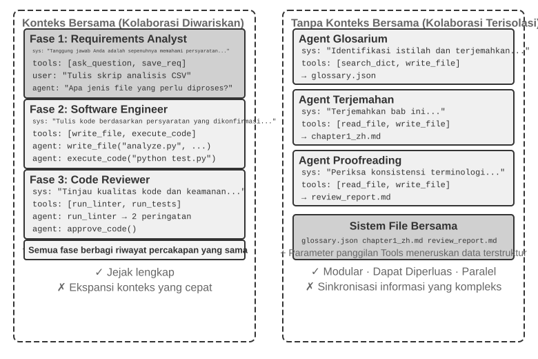
Sebagai kejelasan, kedua arsitektur tersebut merupakan sistem multi-Agent sejati karena system prompt dan tool set berbeda pada setiap tahap, sehingga menjadikannya Agent yang berbeda. Perbedaannya terletak pada metode koordinasinya. Shared context bergantung pada koordinasi implisit: Agent berikutnya mewarisi seluruh riwayat konteks dari Agent sebelumnya, dapat meninjau riwayat interaksi dan jejak pekerjaan yang terlihat, serta menerima informasi melalui konteks itu sendiri. Non-shared context bergantung pada koordinasi eksplisit: Para Agent bertukar informasi melalui file, pesan, atau antarmuka data terstruktur, dan setiap Agent hanya melihat konten yang relevan dengan pekerjaannya sendiri.
Sebagai analogi: yang pertama adalah sebuah tim di sekitar satu meja, di mana setiap orang mendengar semuanya; yang kedua adalah departemen yang berkolaborasi melalui email dan dokumen, masing-masing dengan ruang kerjanya sendiri.
Pembaca yang familier dengan sistem operasi mungkin menemukan analogi yang berguna: Agent dengan shared-context menyerupai thread, sedangkan Agent dengan non-shared-context menyerupai process. Thread berbagi address space, yang membuat peralihan dan komunikasi menjadi murah namun memberikan sedikit isolasi; kerusakan memori dalam satu thread dapat merusak keseluruhan process. Setiap process memiliki address space-nya sendiri, memberikan isolasi yang lebih kuat dan paralelisme yang lebih aman, namun komunikasinya harus menggunakan IPC eksplisit. Kriteria dalam Tabel 10-1 mengikuti dari trade-off ini.
Tabel 10-1 merangkum kriteria pemilihan untuk kedua arsitektur dari lima perspektif: jumlah subtask, context window, paralelisme, isolasi informasi, dan anggaran biaya (cost budget). Ini dapat berfungsi sebagai daftar periksa (checklist) untuk pemilihan arsitektur di awal.
Tabel 10-1 Kriteria Pemilihan Konteks Bersama vs. Konteks Terpisah
| Kriteria Pemilihan | Shared Context | Non-Shared Context |
|---|---|---|
| Jumlah subtask | Sedikit (2-3 peran) | Banyak (pemrosesan paralel diperlukan) |
| Context window | Dapat menampung informasi untuk semua peran | Jendela tunggal tidak cukup |
| Paralelisme | Terutama serial (peran bergiliran di sepanjang trajectory yang sama) | Dapat diskalakan secara masif dalam paralel (konteks bersifat independen, non-blocking) |
| Isolasi informasi | Tidak diperlukan (semua peran berbagi informasi) | Diperlukan (misalnya, tinjauan keamanan tidak boleh menerima konteks internal Agent lain) |
| Anggaran biaya | Satu trajectory diteruskan melintasi tahap; token terakumulasi tahap demi tahap | Beberapa Agent bekerja secara independen; total token biasanya beberapa kali lipat hingga satu orde magnitudo lebih tinggi |
Aturan praktis yang sederhana: Jika prediksi akumulasi konteks melebihi 50% dari jendela (sebuah heuristik, bukan ambang batas eksak), jangan bagikan (don't share). Jika nol informasi yang hilang merupakan persyaratan mutlak untuk kebenaran tugas, bagikan (share). Sebagian besar sistem dunia nyata menggunakan pendekatan yang berbeda pada tahap yang berbeda: beberapa Agent pertama berbagi konteks, tetapi setelah riwayat yang dibagikan menjadi terlalu besar, sistem beralih ke non-shared context dan menggunakan penyerahan (handoff) eksplisit di mana Agent hulu (upstream) memilih apa yang akan diteruskan ke hilir (downstream).
Dimensi 2: Topologi Kolaborasi (Collaboration Topology)¶
Dimensi kedua adalah collaboration topology: struktur tempat kontrol dan informasi mengalir di antara para Agent. Topology dan pembagian konteks secara konseptual berbeda namun berhubungan dalam praktiknya. Sistem shared-context masih memiliki sebuah topology; misalnya, pola transfer_to_agent dalam Eksperimen 10-2 membentuk rantai handoff. Namun, karena setiap handoff membawa seluruh riwayat, biasanya tidak perlu memutuskan informasi apa yang akan diteruskan, sehingga topology sering kali menjadi urutan sederhana dari peralihan peran (role switches). Kolaborasi bergaya obrolan grup (group-chat) adalah sebuah pengecualian yang dibahas nanti di bagian desentralisasi. Sebaliknya, dengan non-shared context, perancang harus secara eksplisit memutuskan bagaimana informasi mengalir dan siapa yang mengoordinasikannya.
Terminologi: Graph Engineering. Istilah "Graph Engineering," yang populer pada bulan Juli 2026, secara umum dalam konteks Agent saat ini merujuk pada perancangan execution graph secara eksplisit: simpul-simpul (nodes) adalah Agent, program biasa, atau keputusan manusia; sisi-sisi (edges) mendefinisikan dependensi tugas, perutean bersyarat (conditional routing), dan jalur kegagalan (failure paths); serta status terstruktur (structured state) yang mengalir di antara node.2 "Collaboration topology" yang dibahas dalam bab ini merupakan subkumpulan multi-Agent dari gagasan tersebut—peer collaboration, manager orchestration, dan decentralized handoffs adalah graph topologies yang berbeda. Karena nama ini masih baru dan mudah tertukar dengan knowledge graphs, GraphRAG, dan execution traces, buku ini terus menggunakan istilah yang lebih stabil, yaitu "collaboration topology" dan "orchestration" sebagai kosakata utamanya.
Dengan kata lain, kedua dimensi tersebut pada prinsipnya membentuk matriks 2×3 (shared/non-shared × tiga topologies)—namun pada baris shared-context, topology tersebut sebagian besar menyusut menjadi serangkaian peralihan peran dengan sedikit hal tersisa untuk diputuskan (bentuk ini dibahas nanti dalam "Peralihan Peran Multi-Tahap" / "Multi-Stage Role Switching"). Oleh karena itu, bab ini hanya menguraikan tiga sel non-shared. Berikut adalah tiga topologies yang khas di bawah non-shared context, dalam urutan peningkatan kompleksitas:
- Peer Collaboration Pattern: Sejumlah kecil Agent (biasanya 2-3) berinteraksi secara setara, membentuk putaran peningkatan iteratif—seperti menulis sebuah makalah di mana satu orang menyusun drafnya dan yang lain memberi anotasi serta merevisinya, di mana kualitas setelah beberapa putaran jauh melebihi apa yang dapat dicapai oleh satu orang saja.
- Manager Pattern (Orchestration Pattern): Sebuah Manager Agent terpusat bertanggung jawab atas perencanaan tugas dan penjadwalan, sementara beberapa sub-agent masing-masing menangani subtask tertentu—seperti seorang manajer proyek yang memimpin beberapa insinyur spesialis dalam sebuah proyek.
- Decentralized Pattern: Tidak ada pengontrol pusat saat runtime; para Agent berkomunikasi satu sama lain seperti manusia untuk berkolaborasi pada berbagai tugas.
Desain terperinci dan skenario yang berlaku untuk setiap pattern akan dibahas di subbab khusus di kemudian hari.
Kapan Multi-Agent Benar-Benar Lebih Baik Daripada Agent Tunggal?¶
Sebelum menyelami arsitektur kolaborasi tertentu, mari kita jawab pertanyaan yang lebih mendasar: Kapan beberapa Agent benar-benar dibutuhkan, dan kapan satu sudah cukup? Jawabannya akan berfungsi sebagai titik acuan untuk setiap pendekatan rekayasa yang mengikutinya. Serangkaian penelitian terbaru mengarah pada sebuah kerangka kerja yang jelas—dan kriteria intinya adalah satu pertanyaan: Apakah kolaborasi tersebut memberikan informasi yang tidak dapat diperoleh oleh Agent tunggal saat menghasilkan jawabannya?
Tabel 10-2 menunjukkan mode kolaborasi mana yang memperkenalkan informasi baru dan membantu menilai apakah kolaborasi multi-Agent menawarkan nilai substantif dibandingkan dengan sebuah Agent tunggal.
Tabel 10-2 Perbandingan Perolehan Informasi dari Mode Kolaborasi Multi-Agent
| Mode Kolaborasi | Memperkenalkan Informasi Baru? | Efek |
|---|---|---|
| Tinjauan mandiri (self-review) oleh model yang sama (membaca ulang output-nya sendiri) | Tidak | Biasanya tidak efektif atau bahkan berbahaya |
| Agent berbeda yang mendebat teks yang sama | Tidak | Sebanding dengan Agent tunggal dengan jumlah komputasi (compute) yang sama |
| Reviewer menggunakan hasil eksekusi pengujian untuk meninjau kode | Ya (execution feedback) | Peningkatan yang signifikan |
| Reviewer menggunakan tangkapan layar yang dirender untuk meninjau kode frontend/PPT | Ya (visual feedback) | Peningkatan yang signifikan |
| Reviewer menggunakan external tools untuk memverifikasi fakta | Ya (tool feedback) | Peningkatan yang signifikan |
Makalah RLEF (Reinforcement Learning from Execution Feedback) tahun 20253 menemukan bahwa melatih sebuah model melalui reinforcement learning untuk menggunakan umpan balik eksekusi kode untuk peningkatan iteratif memberikan hasil yang secara signifikan mengungguli pengambilan sampel model secara independen beberapa kali. Kuncinya adalah bahwa setiap iterasi memperkenalkan hasil eksekusi yang nyata (kesalahan kompilasi, kegagalan pengujian, pengecualian runtime)—informasi yang tidak ada pada saat model tersebut menulis kode. Untuk tugas-tugas pembuatan halaman web, studi WebGen-Agent tahun 20254 melaporkan bahwa umpan balik visual bertingkat (multi-level visual feedback), yang menggabungkan tangkapan layar dengan deskripsi vision-language-model, meningkatkan tolok ukur kinerja Claude 3.5 Sonnet dari 26.4% menjadi 51.9%, hampir menggandakannya.
Kerangka kerja ini membantu menyelesaikan sebuah kontradiksi yang terlihat: beberapa studi akademis menemukan bahwa sebuah Agent tunggal sudah cukup, sedangkan sistem multi-Agent sering kali berkinerja lebih baik dalam praktik rekayasa. Studi-studi tersebut sering kali menguji beberapa Agent yang memeriksa dan mendiskusikan teks yang sama, seperti halnya dalam perdebatan, sedangkan sistem rekayasa yang efektif pada umumnya menambahkan umpan balik eksternal dari eksekusi kode, perenderan visual, atau alat. Hanya yang terakhir inilah yang memperkenalkan informasi baru. Hampir semua penggunaan efektif dari ketiga arsitektur yang dibahas nanti—peer collaboration, orchestration, dan decentralization—dapat dipahami melalui kriteria ini.
Step Budget dan Kinerja Agent. Pertanyaan terkait adalah bagaimana step budget (anggaran langkah) dari suatu Agent—yaitu jumlah pemanggilan tool (tool calls) atau putaran iterasi yang dapat digunakannya—memengaruhi kinerjanya. Lebih banyak step mungkin tampak pasti akan membantu: dengan 30 langkah, sebuah Agent mungkin hanya punya waktu untuk mengimplementasikan fungsionalitas inti, sedangkan 300 langkah memungkinkannya untuk merencanakan, mengimplementasikan, menguji, dan menyempurnakan. Namun, makalah Google tahun 2025 yang berjudul Budget-Aware Tool-Use Enables Effective Agent Scaling mencapai kesimpulan yang berlawanan dengan intuisi (counterintuitive): sekadar memberikan sebuah Agent lebih banyak langkah tidak menjamin kinerja yang lebih baik. Agent standar tidak memiliki "budget awareness"; bahkan dengan 300 langkah, mereka cenderung melakukan pencarian yang dangkal dan dengan cepat mencapai titik stagnan (plateau). Untuk menggunakan langkah tambahan secara efektif, para Agent memerlukan mekanisme yang mengadaptasi strategi mereka terhadap sumber daya yang tersisa, mengeksplorasi secara luas pada awalnya dan mempersempit fokus mereka di akhir. Pendekatan BAVT (Budget-Aware Value Tree Search) tahun 2026 selanjutnya memperkenalkan evaluasi nilai tingkat langkah (step-level value evaluation), menyesuaikan keseimbangan antara eksplorasi (exploration) dan eksploitasi (exploitation) menurut proporsi anggaran yang tersisa. Seiring dengan berkurangnya anggaran, Agent beralih dari eksplorasi luas menuju investigasi yang lebih mendalam.
Temuan-temuan ini memiliki implikasi langsung terhadap perancangan sistem multi-Agent. Sebagai contoh, dalam manager pattern (orchestration), Manager Agent tidak boleh sekadar mendistribusikan tugas-tugas ke sub-agent dan menunggu hasilnya. Alih-alih, ia harus mengalokasikan step budgets secara dinamis berdasarkan kompleksitas tugas—subtask sederhana mendapatkan langkah lebih sedikit; subtask kompleks mendapatkan langkah yang melimpah. Ia juga harus memandu sub-agent untuk menggunakan anggaran-anggaran ini dengan bijak (rencana dulu, baru terapkan, lalu uji, kemudian perbaiki), alih-alih langsung menyelam ke dalamnya.
Satu pertimbangan lagi harus ada sebelum keputusan desain apa pun: biaya (cost). Eksplorasi paralel dan penyempurnaan iteratif menghabiskan biaya—Anthropic telah mengungkapkan bahwa sistem penelitian multi-Agent mereka mengonsumsi sekitar 15 kali lipat token dari percakapan normal, dan bahwa penggunaan token itu sendiri menjelaskan sekitar 80% dari perbedaan kinerja. Perolehan (gains) dari sebuah sistem multi-Agent dengan demikian harus cukup besar untuk membenarkan biaya yang bisa beberapa kali lipat, atau bahkan satu orde magnitudo, lebih tinggi; jika tidak, Agent tunggal yang diatur dengan baik biasanya merupakan tawaran yang lebih baik.
Kolaborasi Multi-Agent dengan Shared Context¶
Dalam kolaborasi multi-Agent dengan shared context, setiap tahap merupakan Agent independen (dengan system prompt dan tool set-nya sendiri), tetapi ia mewarisi keseluruhan trajectory dari Agent sebelumnya—seperti halnya seorang kolega yang mengambil alih sif (shift) dan dapat membuka setiap catatan kerja yang ditinggalkan oleh pendahulunya. Keuntungan inti dari kolaborasi berbasis pewarisan ini adalah nol informasi yang hilang: setiap Agent dapat meninjau detail dari tahap sebelumnya mana pun. Tantangannya adalah mempertahankan Agent saat ini agar tetap fokus pada tanggung jawabnya sendiri alih-alih terganggu oleh sekumpulan riwayat yang diwariskan kepadanya.
Pergantian Peran Multi-Tahap¶
Mari kita selesaikan perdebatan definisional ini terlebih dahulu: dalam bahasa Bab 1, multi-stage role switching adalah sebuah workflow-style orchestration—jalur eksekusi (misalnya, requirements clarification → implementation → review) telah ditentukan sebelumnya. Dari perspektif proses, sebuah proses tunggal mengeksekusi tahapan-tahapan yang berbeda secara berurutan sambil mempertahankan memori yang sama sepanjang proses. Oleh karena itu, klaim bahwa ini "bukan benar-benar multi-agent" ada benarnya. Meskipun demikian, bab ini memperlakukannya sebagai pola multi-agent karena pembingkaian tersebut memiliki manfaat praktis: setiap tahap dapat memiliki System Prompt, tools, dan fokusnya masing-masing, sementara batas antar tahap dapat berfungsi sebagai quality gates.
Dalam tugas-tugas yang kompleks, peran dan tanggung jawab Agent dapat berubah secara signifikan di berbagai tahap. Jika System Prompt statis tunggal digunakan secara keseluruhan, itu akan menjadi terlalu umum untuk memberikan panduan spesifik per tahap atau terlalu panjang karena mencakup instruksi untuk setiap tahap. Sebaliknya, multi-stage role switching mengubah System Prompt dan kumpulan tool sesuai dengan tahap saat ini, memungkinkan Agent untuk bekerja dalam peran yang paling sesuai. Pergantian ini tidak memerlukan pembuatan instance baru atau memulai proses baru; ini hanya mengubah System Prompt dan kumpulan tool dalam sesi eksekusi yang sama. Meskipun perannya berubah, riwayat percakapan dan status tugas tetap digunakan bersama, sehingga Agent dalam peran barunya masih dapat mengakses semua informasi yang terakumulasi di tahap-tahap sebelumnya.
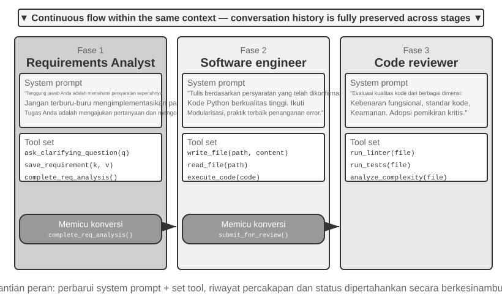
Eksperimen 10-1 ★★: Menentukan System Prompt Berdasarkan Tahap Eksekusi
Eksperimen ini mendemonstrasikan bagaimana System Prompt spesifik per tahap dapat meningkatkan performa di seluruh alur kerja Coding Agent yang lengkap.
Skenario Tugas: Pengguna mengirimkan permintaan pengembangan perangkat lunak, dan Agent memprosesnya melalui tiga tahap: requirements clarification, code implementation, dan quality review.
Tahap 1: Requirements Clarification (Peran: Requirements Analyst)
System Prompt menekankan: - "Tanggung jawab Anda adalah untuk sepenuhnya memahami kebutuhan pengguna. Ajukan pertanyaan untuk mengklarifikasi ambiguitas, memastikan Anda sepenuhnya memahami fungsionalitas, skenario penggunaan, dan persyaratan performa yang diharapkan." - "Jangan terburu-buru melakukan implementasi. Pada tahap ini, tugas Anda adalah mengajukan pertanyaan dan mengonfirmasi, bukan menulis kode." - "Setelah Anda mengonfirmasi bahwa semua persyaratan utama sudah jelas, panggil tool
complete_requirements_analysis()untuk mengakhiri tahap ini."Kumpulan tool dibatasi:
ask_clarifying_question(question)untuk mengajukan pertanyaan klarifikasi kepada pengguna,save_requirement(key, value)untuk mencatat persyaratan yang telah dikonfirmasi, dancomplete_requirements_analysis()untuk menandai tahap ini sebagai selesai.Agent bertanya kepada pengguna jenis file apa yang perlu diproses oleh skrip, apakah skrip harus memproses subfolder secara rekursif, dan apakah skrip harus mempertahankan nama file asli setelah memindahkan file. Pertukaran informasi ini membantunya membangun dan merekam sekumpulan persyaratan yang terstruktur. Setelah persyaratan cukup jelas, ia memanggil
complete_requirements_analysis(). Sinyal penyelesaian ini memberi tahu sistem untuk memuat konfigurasi tahap berikutnya.Tahap 2: Code Implementation (Peran: Software Engineer)
System Prompt baru menekankan: - "Tanggung jawab Anda adalah menulis kode Python berkualitas tinggi berdasarkan persyaratan yang telah dikonfirmasi." - "Ikuti best practices: buat kodenya modular, tangani error dengan tepat, dan sertakan komentar di mana pun itu berguna." - "Setelah menyelesaikan kode dan lulus pengujian dasar, panggil
submit_for_review()untuk memasuki tahap review."Tools juga berubah: tools untuk requirements clarification diganti dengan tools pengembangan seperti
write_file(path, content),read_file(path), danexecute_code(code). Menggunakan persyaratan yang dicatat pada tahap pertama, Agent menulis logika inti, menambahkan penanganan error, dan membuat pengujian. Ia masih dapat berkonsultasi dengan percakapan sebelumnya untuk detail persyaratan, tetapi sekarang hanya berfokus pada implementasi daripada mengajukan pertanyaan lebih lanjut. Setelah selesai, ia memanggilsubmit_for_review().Tahap 3: Code Review (Peran: Code Reviewer)
System Prompt baru menekankan: - "Tinjau kode untuk kebenaran fungsional, kepatuhan terhadap standar pengkodean, penanganan error, performa, dan keamanan." - "Ambil pendekatan kritis dan identifikasi potensi masalah serta peluang untuk meningkatkan kode." - "Jika ditemukan masalah serius, panggil
request_revision(issues)untuk kembali ke tahap implementasi untuk modifikasi; jika kualitasnya dapat diterima, panggilapprove_code()untuk menyelesaikan tugas."Kumpulan tool berubah lagi: tool diganti dengan tool analisis kualitas kode seperti
run_linter(file),run_tests(file), dananalyze_complexity(file). Agent memeriksa ulang kode dari sudut pandang reviewer, menjalankan analisis statis, dan memeriksa potensi bug, masalah performa, atau risiko keamanan.Desain tiga tahap ini memungkinkan Agent untuk fokus pada tugas inti di setiap tahap. Yang lebih penting, transisi tahap yang jelas memastikan bahwa setiap tahap diselesaikan: Agent tidak dapat melewati requirements analysis dan segera mulai mengkode, atau memberikan hasil tanpa review.
Persyaratan Eksperimen: 1. Implementasikan System Prompt tiga tahap, masing-masing dengan definisi peran dan panduan perilaku yang jelas 2. Konfigurasikan kumpulan tool yang cocok untuk setiap tahap 3. Implementasikan mekanisme pemicu transisi tahap (melalui panggilan tool spesifik) 4. Pastikan kontinuitas konteks antar tahap 5. Tangani skenario rollback—ketika code review menemukan masalah, kembali ke tahap implementasi 6. Rekam aktivitas dari setiap tahap untuk mendemonstrasikan bagaimana prompt yang berbeda menghasilkan perilaku yang berbeda
Pergantian Peran Lintas Domain¶
Multi-stage role switching mendemonstrasikan eksekusi bertahap dalam satu jenis tugas (pengembangan perangkat lunak). Cross-domain role switching melangkah lebih jauh: Agent secara dinamis mengubah peran saat tugas bergerak melintasi berbagai domain. Alih-alih mengikuti proses linier yang telah ditentukan sebelumnya, ia memilih peran profesional mana yang akan diadopsi sebagai respons terhadap kebutuhan pengguna yang berubah.
Eksperimen 10-2 ★★: Multi-Role Switching
Prasyarat: Disarankan agar pembaca terlebih dahulu meninjau mekanisme Agent Skills di Bab 2.
Arsitektur Sistem: Lima peran didefinisikan:
- triage (meja depan; titik masuk default): Mengidentifikasi kebutuhan pengguna secara keseluruhan, memecah pekerjaan menjadi subtugas yang berurutan, merutekan setiap subtugas ke spesialis yang tepat, dan melakukan pemeriksaan akhir ketika semua subtugas selesai. Satu-satunya tool-nya adalah
transfer_to_agent.- research (ahli information retrieval): Menggunakan
web_searchuntuk menemukan data, fakta, dan materi.- coding (ahli pemrograman): Menggunakan
execute_pythonuntuk menulis dan menjalankan kode untuk tugas-tugas pemrograman dan pembuatan skrip.- data_analysis (ahli analisis data): Menggunakan
calculate/descriptive_statsuntuk penghitungan kuantitatif dan statistik (misalnya, tingkat pertumbuhan dari tahun ke tahun, tingkat pertumbuhan tahunan majemuk (CAGR), rata-rata).- writing (ahli menulis): Mengubah data yang diambil dan hasil analisis menjadi draf yang jelas yang disesuaikan dengan audiens (dan dapat menggunakan
count_charactersuntuk pemeriksaan panjang karakter kasar).Mekanisme Inti: Tool transfer_to_agent
Semua peran memiliki tool
transfer_to_agent(target_role, reason). Saat sebuah peran memanggilnya, sistem menyimpan riwayat percakapan saat ini, memuat prompt dan kumpulan tool dari peran target, meneruskan riwayat tersebut ke peran tersebut, dan melanjutkan eksekusi.Skenario Eksperimen: Sistem dimulai dengan peran
triagesecara default. Pengguna mengirimkan tugas yang mencakup beberapa domain: "Saya sedang menyiapkan materi untuk investor. Bantu saya mencari penjualan kendaraan energi baru di Tiongkok untuk tahun 2021, 2022, dan 2023, hitung tingkat pertumbuhan tahunan majemuk untuk ketiga tahun ini, lalu tulis ringkasan dalam bahasa Mandarin untuk investor, tidak lebih dari 120 karakter."triagememecahnya menjadi "cari data → hitung metrik → tulis draf" dan pertama-tama menyerahkannya keresearch:transfer_to_agent(target_role="research", reason="Temukan angka penjualan tahunan kendaraan energi baru untuk 2021-2023")
researchmenggunakanweb_searchuntuk menemukan angka penjualan, menambahkan data utama ke dalam percakapan, dan menyerahkan tugas kedata_analysis:transfer_to_agent(target_role="data_analysis", reason="Data sudah siap; hitung CAGR dari 2021 hingga 2023")
data_analysismenggunakancalculateuntuk menghitung tingkat pertumbuhan. Ia kemudian menyerahkan tugas kewriting, yang membuat draf ringkasan dan mengembalikannya ketriageuntuk konfirmasi akhir. Rantai lengkapnya adalahtriage→research→data_analysis→writing→triage. Setiap peran dapat melihat riwayat percakapan lengkap, sehingga peran selanjutnya secara alami mengetahui apa yang telah dilakukan.Keputusan untuk beralih peran bergantung pada panduan di dalam System Prompt. Prompt
triagesecara eksplisit mencantumkan aturan perutean: mencari data atau materi sumber →research; menulis dan menjalankan kode →coding; melakukan penghitungan kuantitatif dan statistik →data_analysis; memoles materi menjadi draf →writing. Sebuah tugas harus diserahkan jika membutuhkan keahlian domain yang mendalam atau tool yang terspesialisasi. Masing-masing prompt spesialis juga mengidentifikasi peran tepat berikutnya atau menginstruksikan spesialis untuk mengembalikan tugas ketriage.Persyaratan Eksperimen: 1. Implementasikan System Prompt dan kumpulan tool yang terspesialisasi untuk setidaknya tiga peran profesional 2. Implementasikan tool
transfer_to_agent, yang mendukung peralihan dinamis 3. Pastikan kontinuitas konteks setelah peralihan peran 4. Cegah penyerahan tugas berputar yang menyebabkan Agent beralih berulang kali antar peran 5. Rancang alur tugas kompleks yang mencakup berbagai domain untuk mendemonstrasikan nilai dari peralihan peran
Kolaborasi Multi-Agent Tanpa Shared Context¶
Dalam arsitektur tanpa shared context, setiap Agent beroperasi sebagai entitas independen dengan context, trajectory, dan state miliknya sendiri. Agent tidak dapat secara langsung mengakses internal context satu sama lain; kolaborasi bergantung sepenuhnya pada transfer data yang eksplisit dan terstruktur melalui tiga mekanisme komunikasi yang diperkenalkan di awal bab ini: parameter tool call, shared file system, dan message bus.
Sebelumnya di bab ini, kita membandingkan mekanisme komunikasi dengan bentuk inter-process communication dan shared vs. isolated context dengan thread vs. process. Analogi ini dapat diperluas lebih jauh (Tabel 10-3):
Tabel 10-3 Korespondensi Antara Multi-Agent System dan Operating System
| Operating System | Multi-Agent System |
|---|---|
| Program (executable file) | Static prefix (System Prompt + definisi tool) |
| Process memory | Trajectory |
| CPU | LLM |
| Kernel | Agent runtime |
| System call | Tool call |
| fork (create child process) | spawn_subagent |
| kill (send signal) | cancel_subagent |
| ps (list processes) | list_agents |
| Exit code and wait() | Ringkasan terstruktur yang dikembalikan oleh sub-agent |
| Shared memory / message passing | Shared file system / message passing |
Program adalah kode statis; process adalah satu instance yang berjalan dari sebuah program. Demikian pula, static prefix menentukan siapa Agent tersebut, sementara trajectory mencatat sejauh mana ia telah berjalan. LLM berperan sebagai CPU: ia tidak menyimpan state-nya sendiri dan digunakan secara time-shared di berbagai Agent dengan memuat context yang berbeda—istilah "context switch" itu sendiri dipinjam dari operating system. Dan karena alasan yang sama, menukar dengan CPU yang lebih cepat membuat program berjalan seperti sebelumnya; menukar dengan model yang lebih kuat membuat Agent tetap menjadi Agent yang sama—identitas dan memorinya berada di dalam prefix dan trajectory, bukan pada bobot model (model weights).
Abstraksi ini bukanlah hal baru: private state, pesan asinkron, dan kemampuan untuk membuat anggota baru merupakan pengaturan dasar yang persis sama dengan Actor model dari tahun 1970-an5. Oleh karena itu, multi-agent system dapat dilihat sebagai versi berbasis LLM dari Actor model, dan sebagian besar pengetahuan yang terkumpul dari operating system dan sistem terdistribusi berlaku secara langsung. Analogi ini runtuh di satu bagian penting: process meneruskan byte secara setia, bit demi bit, sedangkan Agent meneruskan makna, dan setiap penceritaan kembali dapat mendistorsinya. Ini adalah masalah baru yang dibahas dalam bagian "Failure Modes" di bab ini.
Isolasi ala process ini membawa beberapa manfaat praktis dalam rekayasa (engineering): setiap Agent dapat dikembangkan dan diuji secara independen, kemampuan baru dapat ditambahkan tanpa menyentuh kode yang ada, Agent yang gagal tidak secara otomatis menyebarkan kesalahannya ke yang lain, dan banyak Agent dapat dieksekusi secara konkuren tanpa adanya contention atas shared context.
Namun, tidak membagikan context juga memiliki biaya. Yang paling jelas adalah masalah sinkronisasi informasi: bagaimana Agent mempertahankan pemahaman yang konsisten tentang task state? Akankah informasi hilang atau terduplikasi selama transfer? Debugging juga menjadi lebih sulit—ketika masalah muncul, log dari berbagai Agent harus ditinjau untuk merangkai keseluruhan proses eksekusi. Masalah-masalah ini membuat desain spesifikasi antarmuka, format data, dan protokol komunikasi menjadi sangat penting.
Kolaborasi eksplisit tanpa shared context bergantung pada dua infrastruktur yang independen dari topologi. Yang pertama adalah shared file system, medium persisten di mana Agent saling bertukar artifact satu sama lain dan dengan pengguna, membentuk data plane dari kolaborasi. Yang kedua adalah mekanisme komunikasi dan kontrol, yang mendukung message passing, status query, terminasi eksekusi, dan penjadwalan sumber daya antar Agent, membentuk control plane dari kolaborasi. Ketiga topologi di bawah ini semuanya dibangun di atas dua fondasi tersebut.
File System dari Perspektif Agent¶
Di awal bab ini, "shared file system" dicantumkan sebagai salah satu dari tiga mekanisme komunikasi untuk arsitektur tanpa shared context. Dalam sistem nyata, file system yang diakses oleh Agent bukanlah sistem penyimpanan tunggal melainkan virtual file system di mana sistem penyimpanan dengan sumber, lifecycle, dan permission yang berbeda di-mount di bawah satu directory tree. Agent mengaksesnya melalui antarmuka read_file/write_file/list_dir yang terpadu, sementara lapisan dasarnya (underlying layers) dapat berupa disk lokal sementara, object storage yang persisten, API cloud drive pihak ketiga, atau paket sumber daya sistem read-only. Mendefinisikan secara jelas komposisi dari directory tree ini—visibilitas dan lifecycle dari setiap area—merupakan prasyarat untuk merancang kolaborasi multi-agent: sebagian besar dari concurrency conflict dan kebocoran informasi berasal dari pencampuran area-area yang seharusnya diisolasi. Directory tree ini sama dengan address space Agent, dan keempat tipe area tersebut adalah segmen memori dengan permission yang berbeda: beberapa bersifat private dan writable, beberapa dibagikan di antara berbagai pihak, dan beberapa bersifat read-only. Filosofi perlindungan operating system berlaku juga di sini: isolate by default dan deklarasikan sharing secara eksplisit. Dalam multi-agent system yang matang, file system biasanya terdiri dari empat tipe area berikut:
I. Agent-Specific Workspace (Scratchpad). Sebuah direktori private yang eksklusif untuk setiap instance Agent, menyimpan artifact sementara, file temporer, draf, dan log debug. Lifecycle-nya terikat pada instance tersebut dan tidak terlihat oleh Agent lain maupun pengguna. Mengisolasi scratchpad melayani dua tujuan: mencegah file sementara dari beberapa Agent saling menimpa, dan menjaga context main Agent tetap ramping—proses trial-and-error dari sub-agent tetap berada di workspace mereka sendiri, dengan hanya artifact akhir yang dikirimkan ke ruang bersama. Ini adalah padanan di tingkat penyimpanan untuk prinsip Bab 4 bahwa sub-agent mengembalikan ringkasan terstruktur dan bukan trajectory lengkap.
II. Multi-Agent Shared Workspace. Sebuah area kolaborasi yang dapat dibaca dan ditulis oleh berbagai Agent, dan yang terlihat oleh pengguna. Ini adalah medium utama untuk bertukar artifact antar Agent dalam arsitektur tanpa shared context: Glossary Agent menulis daftar istilah, dan Translation Agent membacanya; pengguna juga dapat mengunggah file sumber dan mengunduh hasil akhir di sini. Lifecycle-nya terikat pada keseluruhan tugas dan membutuhkan persistensi. Sebagai area untuk pembacaan dan penulisan konkuren oleh berbagai pihak, ini adalah titik panas untuk concurrency conflict—mekanisme seperti optimistic locking dan isolasi worktree beroperasi di sini, seperti yang dirinci di bawah "Failure Mode One" nanti dalam bab ini. Penggunaan volume mount di /workspace/shared pada Bab 4 untuk menghubungkan main Agent, virtual computer, dan virtual phone merupakan implementasi tipikal dari lapisan ini.
III. Mounted External Resources. Sumber informasi pihak ketiga yang diotorisasi oleh pengguna—Google Drive, Notion, Dropbox, wiki perusahaan, dll.—dipetakan ke titik mount dalam file system (misalnya, /mnt/gdrive) melalui adaptor. Agent mengakses dokumen Notion dengan membaca sebuah file; adaptor yang mendasarinya akan memanggil API yang bersesuaian. Tiga karakteristik yang membedakan lapisan ini dari penyimpanan lokal dan harus ditangani secara eksplisit selama perancangan: akses dibatasi oleh permission eksternal (permission pengguna di sistem sumber menentukan visibilitas Agent), latensi lebih tinggi dan konsistensi lebih lemah (setiap operasi baca melibatkan perjalanan bolak-balik jaringan, dan perubahan eksternal mungkin tidak segera terlihat, jadi data tersebut harus diperlakukan sebagai eventually consistent), dan akses utamanya bersifat on-demand dan read-only (menulis kembali ke sumber eksternal harus dilakukan dengan hati-hati, karena penulisan yang salah dapat mencemari data asli pengguna). Antarmuka file yang terpadu berarti Agent tidak memerlukan custom tool untuk setiap sumber data, namun hal ini juga menutupi perbedaan kinerja dan keamanan tersebut. Oleh karena itu, status read-only/writable, timeout, dan batas-batas kredensial harus dikelola secara eksplisit di tingkat mount.
IV. Built-in System Resources. Sebuah paket sumber daya yang telah diinstal sebelumnya oleh sistem dan dibagikan secara read-only kepada semua Agent. Contoh umumnya adalah Skills yang diperkenalkan pada Bab 2 dan 4—dokumen pengetahuan dan skrip yang diorganisasikan sebagai file, di-mount di path seperti /skills, diakses melalui progressive disclosure (indeks terlebih dahulu, lalu di-expand sesuai permintaan). Contoh lainnya termasuk panduan referensi, pustaka template, dan definisi tool yang dibagikan. Lapisan ini dibagikan secara global, bersifat read-only, stabil di seluruh sesi, dan dapat dibaca secara konkuren oleh semua Agent tanpa concurrency control.
Gambar 10-3 mengilustrasikan bagaimana keempat tipe area ini secara seragam di-mount di bawah satu directory tree tunggal: Agent mengakses keseluruhan pohon melalui antarmuka yang terpadu, pengguna mengunggah dan mengunduh file dari ruang bersama, sumber data eksternal di-mount melalui adaptor, dan sumber daya sistem bawaan disediakan secara read-only.
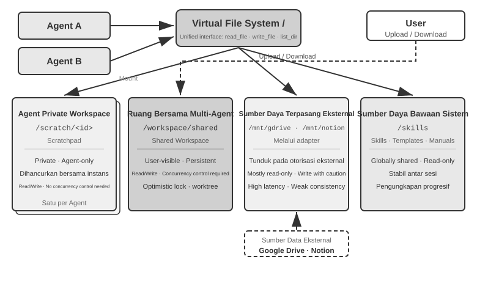
Tabel 10-4 membandingkan keempat tipe area ini di empat dimensi—visibilitas, lifecycle, permission baca/tulis, dan concurrency control—yang berfungsi sebagai daftar periksa untuk desain tata letak file system.
Tabel 10-4 Empat tipe area dari Agent Virtual File System
| Area | Visibility | Lifecycle | Read/Write | Concurrency Control |
|---|---|---|---|---|
| Agent-Specific Workspace | Hanya Agent pemiliknya | Dihancurkan bersama dengan instance Agent | Read/Write | Tidak diperlukan (private) |
| Multi-Agent Shared Workspace | Semua Agent yang berkolaborasi dan pengguna | Persisten selama durasi tugas | Read/Write | Diperlukan (optimistic lock / worktree) |
| Mounted External Resources | Bergantung pada otorisasi eksternal | Ditentukan oleh sumber eksternal | Sebagian besar read-only, penulisan butuh kehati-hatian | Dikelola oleh sumber eksternal |
| Built-in System Resources | Semua Agent | Stabil di berbagai sesi | Read-only | Tidak diperlukan (read-only) |
Nilai dari "file path sebagai antarmuka universal" terletak pada perlakuan path sebagai unit pertukaran. Baik ketika Agent saling bertukar artifact, main Agent menyerahkan input ke sub-agent, atau organisasi berkolaborasi melalui A2A, mereka mengoper string path yang ringan daripada memuat konten file tersebut ke dalam context window (Bab 4). Hal ini sejalan dengan konsep pada Bab 5 tentang "file system sebagai hub Agent," yang menjelaskan bagaimana satu Agent tunggal menggunakan file system untuk menampung memori dan kemampuan. Di sini, abstraksi yang sama meluas ke banyak Agent: sebuah virtual directory tree yang me-mount penyimpanan private, shared, eksternal, dan bawaan menyediakan fondasi penyimpanan untuk kolaborasi multi-agent.
Komunikasi dan Kontrol Antar Agent¶
Sementara file system menyelesaikan masalah pertukaran artifact antar Agent, kolaborasi juga membutuhkan control plane. Di sinilah baris lifecycle pada Tabel 10-3 berperan: primitif tool yang diberikan pada Bab 4—membuat (spawn_subagent), mengirim pesan (send_message_to_subagent), membatalkan (cancel_subagent), dan menemukan (list_agents)—berkorespondensi dengan fork, message, kill, dan ps di dunia process. Bagian ini tidak mengulangi definisi antarmuka tersebut melainkan berfokus pada empat kemampuan yang sering terabaikan yang esensial untuk kolaborasi multi-agent.
I. Message Passing. Bentuk yang paling sederhana adalah point-to-point: Agent A secara langsung memanggil send_message_to_agent_b(content). Hal ini cocok untuk skenario dengan topologi tetap dan jumlah Agent yang sedikit (misalnya, pengaturan dual-agent telepon + komputer pada Eksperimen 10-4 di bab ini). Ketika jumlah Agent meningkat dan asynchronous parallelism diperlukan, jumlah koneksi point-to-point tumbuh secara kuadratik dengan jumlah Agent, dan baik pengirim maupun penerima harus online secara bersamaan. Dalam kasus seperti itu, sebuah message bus harus digunakan (dirinci lebih lanjut di bab ini di bawah "Parallel Coordination Pattern"): Agent memublikasikan pesan ke bus, yang meneruskannya berdasarkan langganan, sehingga pengirim tidak perlu mengetahui siapa saja pelanggannya. Baik secara point-to-point maupun melalui bus, pesan pada umumnya harus membawa envelope yang terstruktur: ID pengirim, target (Agent spesifik atau broadcast), tipe pesan (misalnya, task_assigned/status_update/result/terminate), dan sebuah JSON payload. Format envelope yang terpadu memastikan perutean dan parsing yang andal oleh penerima serta membuat rantai kolaborasi dapat dilacak—sebuah aspek kunci dari debugging multi-agent system.
II. Status Query. Ini adalah bagian dari control plane yang paling sering diremehkan. Setelah sebuah main Agent mengirimkan sebuah sub-agent, ia membutuhkan visibilitas ke dalam kemajuan sub-agent tersebut; jika tidak, ia tidak dapat memutuskan apakah harus terus menunggu atau melakukan intervensi ketika sub-agent mengalami kebuntuan. Pendekatan yang intuitif adalah dengan meminjam dari RPC dan mendefinisikan antarmuka query get_subagent_status(agent_id) yang mengembalikan "running/completed/failed" plus persentase kemajuan. Namun, antarmuka pull semacam itu ternyata jauh kurang berguna dari yang diharapkan: sub-agent mulai mengeksekusi pada saat ia dibuat dan berjalan hingga selesai atau gagal. Ia tidak melewati serangkaian queued states seperti halnya job dalam batch system tradisional, sama seperti pemrograman Unix jarang perlu melakukan polling terhadap proses lain menggunakan PID-nya untuk mengetahui status yang berjalan. Polling juga membawa dilema bawaan: polling terlalu sering dan Anda akan membuang-buang token; polling terlalu jarang dan Anda akan merespons terlambat. Cara yang lebih alami untuk mendapatkan status adalah kembali ke dua paradigma komunikasi yang diperkenalkan di awal bab ini.
Mendapatkan status melalui message passing. Main Agent cukup mengirimkan pesan ke sub-agent: "Bagaimana perkembangannya?" Sub-agent membalas pada saat yang tepat. Semuanya bersifat asinkron: mengirim pesan tidak memblokir eksekusi main Agent itu sendiri, dan kapan—atau apakah—pihak lain membalas adalah masalah terpisah, sama halnya seperti seorang manajer meminta kemajuan dari bawahannya melalui pesan instan tanpa mengharuskan mereka untuk melepaskan semua pekerjaannya saat itu juga. Sebaliknya, sub-agent juga dapat secara proaktif mengirim pesan untuk melaporkan saat ia mencapai sebuah pencapaian (milestone); jika sistem telah memiliki message bus, ini hanyalah memublikasikan sebuah status_update ke bus ("real-time monitoring" dari Eksperimen 10-6 berada dalam bentuk ini). Terlepas dari apakah status diminta secara eksplisit atau dilaporkan secara proaktif, status yang dibawa di dalam pesan tersebut harus mengadopsi kosakata state-machine yang seragam (executing, needs input, completed, failed)—protokol A2A di bagian selanjutnya dalam bab ini menstandarkan lifecycle tugas ke dalam himpunan state yang tepat seperti ini.
Mendapatkan status melalui shared file system. Bentuk yang paling menyeluruh adalah trajectory persistence: seiring berjalannya waktu, sub-agent menserialisasikan setiap event trajectory ke dalam JSON dan menambahkan hal tersebut ke sebuah log file di file system—biasanya satu file per sesi, satu event per baris, yaitu JSONL. Trajectory, yang didefinisikan pada Bab 1, adalah serangkaian lengkap dari pesan pengguna, balasan model, tool call, dan hasil. Main Agent tidak membutuhkan protokol pelaporan status; dengan membaca file ini secara langsung, ia dapat memeriksa keseluruhan eksekusi sub-agent: tool apa yang sedang dipanggil, apa yang terjadi pada langkah terbarunya, dan apakah ia terjebak dalam perulangan percobaan gagal berulang kali. Dalam istilah proses, ini menyerupai pembacaan memori dari proses lain secara langsung. Hal ini tidak menempati context sub-agent, tidak bergantung pada kerja samanya, dan menawarkan granularitas observasi yang paling detail.
Detail menyeluruh seperti itu juga merupakan sebuah beban. Sebuah trajectory dapat dengan mudah mencapai puluhan ribu token, dan main Agent harus menyaringnya (distill) setelah membaca, menghabiskan baik waktu maupun token. Di sebagian besar skenario, file progress yang disepakati lebih praktis: saat memulai sub-agent, main Agent menginstruksikannya untuk memperbarui progress.md setiap kali ia menyelesaikan masing-masing item. Main Agent dapat membaca file yang ringan ini kapan saja untuk mengukur kemajuan. Ini menyerupai dua proses yang mereservasi sebuah blok kecil shared memory dengan format yang disepakati, mengekspos progres yang telah disaring daripada keseluruhan state memori.
File progress juga memungkinkan deteksi kebuntuan (stuck detection). Jika waktu modifikasi terakhir dari progress.md atau file trajectory belum berubah selama lebih dari N menit, sistem dapat memperlakukan sub-agent tersebut sebagai tidak aktif dan memicu timeout safety net (menggemakan mekanisme Heartbeat dan monitor_shell dari Bab 4). Ini mencegah sub-agent yang mandek agar tidak menurunkan seluruh sistem.
Nilai dari trajectory persistence melangkah jauh melebihi sekadar pemantauan. Ingatlah kesimpulan di Bab 1: "context sebuah Agent = static prefix + trajectory." Static prefix (System Prompt, definisi tool) ditentukan oleh kode, dan Agent itu sendiri tidak memiliki runtime state selain trajectory (working artifact sudah berdiam di file system)—trajectory adalah keseluruhan state Agent. Menyimpan trajectory ke dalam file secara persisten dan real time ekuivalen dengan memiliki checkpoint lengkap di setiap saat: baik ketika proses Agent crash, mesin kehilangan daya, atau pengguna secara aktif menutup sesi, cukup dengan memuat ulang file trajectory dan menyisipkan static prefix di awalnya akan memungkinkan eksekusi dilanjutkan dari tempat ia terhenti—tepat seperti inilah fitur session resume dari Coding Agent seperti Claude Code dan Codex CLI diimplementasikan. Hal ini merupakan ide yang sama seperti write-ahead log (WAL) pada sebuah basis data: setiap event pertama-tama ditambahkan ke append-only log, dan state selalu dapat di-replay dari log tersebut (desain memori "fact log + periodic checkpoint" pada Bab 3 merupakan ide yang sama yang diterapkan pada sistem memori). Untuk multi-agent system, hal ini berarti sub-agent secara alamiah dapat dipulihkan (recoverable), diaudit (auditable), dan mudah diserahterimakan (hand off): Manajer dapat menghidupkan kembali sebuah sub-agent dari state valid terakhirnya pasca-crash, mem-replay rentetan event pada trajectory setelahnya untuk menemukan penyebab kegagalan, dan bahkan menyerahkan trajectory tersebut beserta tugasnya ke Agent lain untuk dilanjutkan.
III. Terminasi Eksekusi. Dalam kolaborasi paralel, skenario yang umum terjadi adalah "satu berhasil, yang lain menjadi tidak relevan"—banyak Agent mencari secara terpisah, dan begitu salah satunya menemukan target, yang lainnya harus segera berhenti (cascading termination di Eksperimen 10-6 dalam bab ini). Ada dua level terminasi, dan pengguna Unix akan mengenalinya sebagai pembedaan antara SIGTERM dan SIGKILL. Graceful termination lebih disarankan: main Agent mengirimkan sinyal terminate, sub-agent merespons pada titik aman di langkahnya saat ini, membersihkan resource (menutup browser session, menulis file yang tertunda, melepaskan lock), mengirimkan acknowledgment (ack), dan kemudian exit. Forced termination adalah fallback (cadangan): langsung mengakhiri process, hanya digunakan ketika sub-agent tidak merespons graceful signal, dengan kerugian berupa potensi tertinggalnya dangling resource dan penulisan yang tidak tuntas. Dua poin engineering membutuhkan perhatian. Pertama, graceful termination mengharuskan sub-agent untuk mengecek sinyal terminasi secara berkala di dalam loop-nya (mirip dengan mekanisme interrupt di Bab 4); jika tidak, ia tidak dapat menerima sinyal tersebut. Kedua, cascading termination memiliki kondisi balapan (race condition): beberapa sub-agent mungkin saja melaporkan keberhasilan secara hampir bersamaan. Main Agent harus menggunakan lock atau desain yang idempoten (idempotent design) untuk memastikan bahwa hanya satu keberhasilan saja yang diterima dan sinyal terminasi tersebut disiarkan (broadcast) sekali saja. Lihat pembahasan tentang race condition di Eksperimen 10-6.
Satu hal yang masih menggantung: setelah main Agent berakhir, apa yang terjadi dengan sub-agent yang masih berjalan? Pendekatan engineering terbersih dipinjam dari context milik Go—terminasi mengalir turun mengikuti hubungan penciptaannya: batalkan satu Agent maka semua sub-agent yang ia hasilkan akan turut dibatalkan bersamanya, mencegah anak Agent yang menjadi yatim (orphaned child Agent) agar tidak tertinggal. "Sub-agent mengecek sinyal terminasi pada titik aman" di atas berkorelasi secara presisi dengan polling ctx.Done() di Go. Sebaliknya, jika Anda benar-benar membutuhkan background Agent yang berjalan lama dan terpisah dari main Agent (seperti halnya nohup pada Unix), biarkan ia bermula dari lifecycle tree baru (berkorelasi dengan context.Background()), mendeklarasikan secara eksplisit bahwa ia tidak berakhir bersama dengan parent-nya.
IV. Manajemen dan Penjadwalan Sumber Daya (Resource Management and Scheduling). Separuh lainnya dari pekerjaan sebuah operating system adalah mengalokasikan sumber daya yang langka. Di dunia process, sumber daya yang langka itu adalah waktu CPU dan memori; di dunia Agent, itu adalah token, uang, dan budget konkurensi (concurrency budget)—setiap langkah yang diambil oleh sebuah sub-agent akan memakan ketiganya. Tanggung jawab ini biasanya jatuh pada Manajer atau runtime: tetapkan budget untuk jumlah langkah atau token saat memulai sub-agent, dan hentikan ketika telah terlampaui; berikan tugas yang sulit kepada model yang kuat dan tugas-tugas mekanis kepada model yang murah (low-cost); batasi konkurensi sehingga puluhan Agent tidak menghabiskan kuota API sekaligus; dan ketika tugas yang lebih mendesak tiba, potong (interrupt) sub-agent yang sedang mengeksekusi—inilah preemption. Praktik di area ini masih jauh belum sematang penjadwalan CPU, namun ia menentukan batas atas pengeluaran (cost ceiling) dari sebuah multi-agent system dan semestinya sudah dipertimbangkan pada tahap desain arsitektur.
Pertukaran artifact (data plane) beserta message passing, status query, terminasi eksekusi, dan penjadwalan sumber daya (control plane) secara bersama-sama mendukung multi-agent system yang tidak berbagi (share) context. Ketiga topologi kolaborasi di bawah ini, pada dasarnya, merupakan pilihan-pilihan yang berbeda—yang dibangun di atas kedua plane tersebut—terkait siapa yang memegang kendali dan bagaimana informasi mengalir.
Berdasarkan hubungan kolaboratif dan karakteristik aliran kontrol antar Agent, kolaborasi tanpa shared context dapat dibagi ke dalam tiga arsitektur utama—peer collaboration pattern, manager pattern, dan decentralized pattern—masing-masing cocok untuk tipe tugas yang berbeda.
Pola Kolaborasi Sejawat: Pemeriksaan Timbal Balik dan Peningkatan Iteratif¶
Peer collaboration pada umumnya melibatkan 2-3 Agent dengan kedudukan setara yang saling memberikan feedback melintasi berbagai putaran iterasi. Nilai intinya adalah keberagaman kognitif (cognitive diversity): Agent yang berbeda memeriksa permasalahan yang sama dari sudut pandang yang berbeda-beda, menyeimbangkan antara inovasi dengan robustness (ketangguhan) guna membuahkan hasil yang jauh lebih baik daripada yang dapat diraih oleh satu Agent tunggal mana pun.
Dibandingkan dengan manager dan decentralized pattern, peer collaboration jauh lebih simpel untuk diimplementasikan—cukup mendefinisikan peran dari kedua Agent tersebut, mekanisme komunikasi, dan kondisi berhentinya iterasi, dan Anda telah memiliki sebuah sistem yang berjalan. Ia merupakan opsi ideal untuk memvalidasi ide dengan cepat dan membangun purwarupa.
Salah satu penggunaan paling umum dari peer collaboration adalah untuk mengatasi kegagalan yang sering terjadi di dalam praktik Agent: premature termination—berhenti saat pekerjaan baru setengah selesai. Hal ini memiliki tiga bentuk yang tipikal; contoh-contoh di bawah ini berasal dari Coding Agent dan dari Pine AI, Agent yang diperkenalkan di bagian Pendahuluan yang melakukan panggilan telepon atas nama pengguna untuk berurusan dengan pedagang dan penyedia layanan. Yang pertama adalah lazy fake-done: melakukan sebagian pekerjaan dan menyatakannya selesai sepenuhnya—sebuah Coding Agent menulis kode, namun tidak pernah menjalankan tes atau mencoba deployment (penerapannya), lalu melaporkan "task complete"; seorang pengguna memberikan dua urusan ke Pine AI, dan ia menyelesaikan urusan pertama, melupakan yang kedua, dan dengan ceria melaporkan "all taken care of." Yang kedua adalah premature give-up: mendeklarasikan seluruh pekerjaan mustahil dilakukan setelah ada satu jalan buntu—Pine AI dapat menghubungi pihak pedagang melalui telepon, formulir web, atau email, namun setelah satu panggilan telepon ditolak, ia memberi tahu pengguna "ini tidak bisa dilakukan," padahal mengganti channel dan mencoba lagi kemungkinan besar akan membuahkan keberhasilan. Yang ketiga adalah false success: Agent meyakini bahwa pekerjaan telah selesai, namun perulangan (loop) pada dasarnya tidak pernah tertutup—pihak seberang secara lisan menyetujui pengembalian uang di telepon, padahal pengguna masih harus mengonfirmasi sebuah langkah di aplikasi mobile-nya; Agent melaporkan "all set", pengguna tidak pernah mengetahui bahwa ada tindakan lanjutan, dan pengembalian uang tersebut tidak pernah diterima. Ketiga bentuk ini mengerucut pada satu akar penyebab yang sama: hingga diverifikasi, status "selesai (done)" hanyalah klaim dari model, bukan sebuah pembuktian.
Mengubah klaim menjadi pembuktian merupakan ranah dari Loop Engineering secara tepat, tahap terakhir dari lengkung evolusi di Bab 1: merancang perulangan yang membuat Agent terus berjalan—temukan kepingan pekerjaan berikutnya, eksekusi, verifikasi, rekam progres—dan biarkan sebuah pihak pemverifikasi (verifier), bukan model itu sendiri, yang memutuskan apakah ia sudah benar-benar aman untuk berhenti. Peran manusia bergeser secara sepantasnya dari "sang operator yang mem-prompt Agent" menjadi "sang engineer yang merancang loop." Istilah tersebut diciptakan pada bulan Juni 2026 oleh Addy Osmani6; Boris Cherny, kepala Claude Code di Anthropic, mengatakannya secara lebih lugas: "Saya tidak lagi mem-prompt Claude. Pekerjaan saya adalah menulis loop." Kesimpulan sentral yang muncul dari diskusi itu adalah bahwa bottleneck dari loop tersebut berada di verifier, bukan pada modelnya: dengan verifikasi yang tidak andal, perulangan yang lebih cepat hanya akan menandai luaran yang buruk sebagai suatu hasil yang komplet secara lebih dini. Dan seperti yang disampaikan pada Pendahuluan, praktiknya muncul lebih dulu, sedangkan penamaan menyusul belakangan. Jauh sebelum istilah tersebut menjadi tren, tim Agent terkemuka—Pine AI salah satunya—telah menggunakan "loop plus verification" untuk melawan premature termination. Cara paling efektif dalam mengorganisasikan verifikasi tersebut adalah paradigma Proposer-Reviewer di bawah ini.
Paradigma Proposer-Reviewer.
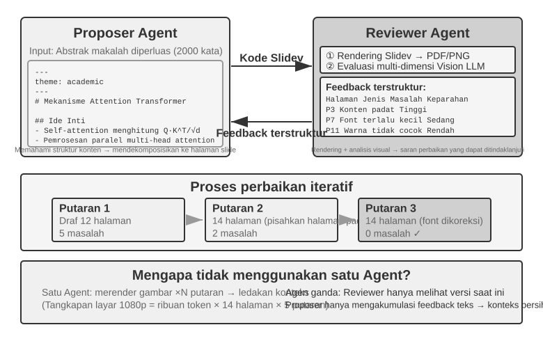
Proposer-Reviewer adalah paradigma peer-collaboration kanonik. Bab 5 telah membahas prinsip-prinsip desainnya dan aplikasi praktis dalam tiga eksperimen: pembuatan PPT, pengeditan video, dan visualisasi log. Proposer Agent menghasilkan kode, sementara Reviewer Agent merender hasil eksekusi, mengevaluasi kualitasnya menggunakan vision-language model, dan memberikan saran terstruktur untuk perbaikan. Keduanya beriterasi hingga hasilnya memenuhi standar yang disyaratkan.
Paradigma ini juga berlaku untuk skenario seperti tinjauan keamanan (Proposer menghasilkan action plan, Reviewer memeriksa kepatuhan dan potensi risiko), moderasi konten (Proposer menyusun balasan, Reviewer memeriksa aturan bisnis dan norma bahasa), dan tinjauan kode (Proposer menulis kode, Reviewer memeriksa keamanan dan best practices).
Mengapa sebuah Agent tunggal tidak bisa menghasilkan dan kemudian meninjau pekerjaannya sendiri? Ini tepat di mana kriteria dari "Kapan Multi-Agent Benar-benar Lebih Baik Daripada Agent Tunggal?" di awal bab ini berlaku—jika tinjauan tidak memperkenalkan informasi baru, itu hanya "meminta model untuk berpikir lagi." Penelitian terkait memberikan jawaban yang jelas. Dalam makalah ICLR 2024 mereka "Large Language Models Cannot Self-Correct Reasoning Yet," Huang et al. menemukan bahwa meminta GPT-4 untuk meninjau dan mengoreksi jawabannya sendiri tanpa umpan balik eksternal justru menurunkan akurasi—model lebih sering mengubah jawaban yang benar menjadi salah daripada mengubah jawaban yang salah menjadi benar.
Sebuah makalah survei tahun 2024 yang diterbitkan di TACL, "When Can LLMs Actually Correct Their Own Mistakes?" (arXiv:2406.01297), semakin mengkonfirmasi kesimpulan ini: kecuali umpan balik eksternal yang andal disediakan (misalnya, hasil eksekusi test case, output verifikasi dari alat eksternal), hanya mengandalkan "self-correction" model sendiri sebagian besar tidak efektif.
Makalah CRITIC di ICLR 2024 memberikan eksperimen komparatif yang intuitif. CRITIC meminta model menggunakan alat eksternal (search engine, Python interpreter) untuk memverifikasi jawabannya sendiri, yang mengarah pada peningkatan kinerja yang signifikan. Namun, ketika peneliti menghapus langkah verifikasi alat dan hanya menyimpan penilaian diri (self-assessment) model, sebagian besar peningkatan itu menghilang. Ini menunjukkan bahwa nilai dari tinjauan bukan terletak pada "meminta model untuk berpikir lagi," tetapi pada memperkenalkan informasi baru yang tidak tersedia selama pembuatan model—hasil pengujian, tangkapan layar yang dirender, kesalahan kompilasi, hasil pencarian eksternal.
Ini adalah prinsip desain inti dari paradigma Proposer-Reviewer. Dalam eksperimen pembuatan PPT dari Bab 5, nilai dari Reviewer Agent bukan "menggunakan model yang sama untuk melihat kode lagi," tetapi merender PPT dan mengambil tangkapan layar—sebuah tangkapan layar yang berisi informasi visual yang tidak dapat diperoleh Proposer Agent saat menghasilkan kode. Demikian pula, dalam skenario pembuatan kode, hasil lulus/gagal dari mengeksekusi test case adalah sinyal baru yang tidak ada saat kode ditulis—nilai independen dari Reviewer berasal tepat dari aksesnya ke umpan balik eksternal ini yang tidak tersedia bagi Proposer.
Dilihat melalui lensa Loop Engineering, pola loop yang dikatalogkan oleh industri memetakan ke pola dalam buku ini. Loop tertutup (closed loop) dengan persetujuan manusia sesuai dengan pra-persetujuan (pre-approval) Bab 4, di mana manusia adalah peninjau akhir. Loop terbuka (open loop) dengan anggaran (budget) atau batasan putaran (round cap) sesuai dengan iterasi PPT multi-putaran Bab 5, yang memungkinkan paling banyak lima putaran. Sub-agent yang diorkestrasi sesuai dengan pola manajer (manager pattern) di bagian selanjutnya. Oleh karena itu, Loop Engineering tidak mendeskripsikan arsitektur baru melainkan kerangka kerja umum—loop + verifikasi + kondisi berhenti (stop conditions)—yang menyatukan pola-pola kolaborasi ini. Paradigma Proposer-Reviewer mengisi peran verifikasi dalam kerangka kerja tersebut.
Ekstensi: Pola Peer Collaboration Lainnya.
Debate: Beberapa Agent memegang posisi yang berbeda, mengeksplorasi ruang masalah (problem space) melalui dialog adversarial. Misalnya, ketika mengevaluasi solusi teknis, Agent A berperan sebagai "pendukung," mendaftar keuntungan dan peluang solusi, sementara Agent B berperan sebagai "penentang," menunjukkan risiko dan batasan. Setiap putaran perdebatan melibatkan bantahan atau perluasan argumen pihak lain. Ketika sebuah Agent tunggal menganalisis masalah, ia sering kali mendukung satu perspektif dan mengabaikan bukti yang berlawanan (counterevidence). Perdebatan terstruktur memaksa kedua posisi dikembangkan sepenuhnya, membantu pembuat keputusan mencapai penilaian yang lebih seimbang.
Namun, efektivitas praktis dari perdebatan masih diperdebatkan di dunia akademis. Sebuah studi tahun 2026 oleh Tran dan Kiela 7 membandingkan sebuah Agent tunggal dengan lima arsitektur multi-agent (sequential, debate, ensemble, parallel roles, subtask-parallel) pada tugas multi-hop reasoning. Mereka menemukan bahwa ketika anggaran thinking-token dijaga konstan, Agent tunggal berkinerja setara atau bahkan lebih baik daripada sistem multi-agent (kecuali pemanfaatan konteks terdegradasi ke titik tertentu). Para peneliti memberikan penjelasan berdasarkan data processing inequality dalam teori informasi: beberapa Agent dalam perdebatan memproses informasi tekstual yang persis sama, dan setiap transmisi serial dari kesimpulan perantara antara Agent hanya dapat menghilangkan informasi, bukan menciptakannya. Manfaat dari mode perdebatan di beberapa makalah akademis kemungkinan besar berasal dari beberapa Agent yang mengonsumsi lebih banyak total komputasi. Penting untuk mengklarifikasi batasan argumen ini: argumen ini menargetkan bottleneck informasi yang disebabkan oleh "transmisi serial multi-agent dari kesimpulan perantara" dan tidak menegasikan pendekatan lain, seperti beberapa sampel independen dari masalah yang sama diikuti oleh agregasi (misalnya, self-consistency, majority voting), atau memanfaatkan asimetri dalam kesulitan antara pembuatan dan verifikasi (menulis jawaban itu sulit, memverifikasinya itu mudah) untuk pembagian kerja generation-verification. Skenario ini entah memperkenalkan pengambilan sampel independen tambahan atau mengeksploitasi struktur asimetris dari tugas itu sendiri, dan tidak berada dalam cakupan data processing inequality.
Brainstorm: Beberapa Agent secara independen menghasilkan ide-ide, kemudian membagikannya satu sama lain, saling menginspirasi. Misalnya, dalam tugas inovasi produk, Agent 1 mengusulkan "menambahkan fitur social sharing," Agent 2 terinspirasi untuk menyarankan "tidak hanya berbagi ke jejaring sosial, tetapi juga menghasilkan poster sharing yang dipersonalisasi," dan Agent 3 mensintesis dua yang pertama untuk mengusulkan "template poster yang dapat disesuaikan pengguna membentuk template marketplace." Agent yang berbeda memiliki "preferensi berpikir" (thinking preferences) yang berbeda (dicapai melalui prompt atau model yang berbeda), dan dengan merangsang satu sama lain, mereka mengeksplorasi ruang solusi yang lebih luas untuk menemukan kombinasi kreatif yang akan sulit dikonsep oleh Agent tunggal.
Panel Discussion: Beberapa Agent masing-masing mewakili perspektif dari domain profesional tertentu, bersama-sama mendiskusikan masalah interdisipliner. Misalnya, ketika mengevaluasi kelayakan produk baru, Engineer Agent menganalisis kesulitan implementasi dari sudut pandang teknis, Product Agent menilai daya tarik pasar dari perspektif user experience, dan Operations Agent menganalisis kelayakan bisnis dari perspektif biaya dan sumber daya. Agent-agent ini tidak bersifat adversarial melainkan saling melengkapi (complementary), bersama-sama menyusun gambaran utuh dari masalah dan mengidentifikasi batasan dan peluang lintas domain.
Pola Manajer (Manager Pattern): Koordinasi Terpusat¶
Ketika sebuah tugas melibatkan lebih dari lima sub-tugas (subtasks), membutuhkan penjadwalan dinamis (dynamic scheduling), atau memiliki dependensi yang kompleks antar sub-tugas, peer collaboration sudah di luar kemampuannya, dan pola manajer (manager pattern) diperlukan. Pekerjaan Manager Agent menyerupai pekerjaan project manager: memahami tugas secara keseluruhan, memecahnya menjadi sub-tugas yang dapat ditugaskan, memilih Agent yang tepat untuk masing-masing sub-tugas, melacak kemajuan, menangani pengecualian (exceptions) dengan mencoba ulang tugas, mengganti Agent, atau merevisi rencana (plan), dan akhirnya mengintegrasikan output Agent-agent menjadi hasil akhir.
Dari perspektif desain sistem, pola manajer memodelkan setiap Agent khusus (specialized Agent) sebagai sebuah tool yang dapat dipanggil oleh Manager. Kumpulan tool Manager tidak hanya mencakup alat eksternal (external tools) tradisional, seperti pencarian dan operasi file, tetapi juga antarmuka untuk memanggil Agent lain. Manager memanggil Agent yang sesuai melalui sebuah tool call, meneruskan parameter tugas dan konteks yang diperlukan, menunggu penyelesaian, dan menerima hasilnya. Dari perspektif Manager, memanggil sebuah Agent pada dasarnya tidak berbeda dengan memanggil tool biasa: keduanya melibatkan pengiriman permintaan (request) dan penerimaan respons (response). Abstraksi terpadu ini membuat pola manajer mudah untuk diperluas. Menambahkan kemampuan hanya membutuhkan pengembangan Agent yang sesuai dan mendaftarkannya sebagai tool, tanpa mengubah logika inti Manager. Pola ini juga secara alami mendukung heterogenitas (heterogeneity): Agent yang berbeda dapat menggunakan model, prompt, kumpulan tool, dan bahkan lingkungan perangkat keras (hardware environments) yang berbeda.
Abstraksi "Agent sebagai tools untuk satu sama lain" telah ditetapkan di bagian "Alat Kolaborasi (Collaboration Tools)" di Bab 4: desain antarmuka spawn_subagent / send_message_to_subagent / cancel_subagent / list_agents berlaku secara langsung pada pemanggilan sub-agent oleh Manager di sini. Adapun apa yang diteruskan ke arah "Manager → sub-agent", lihat desain handoff-package nanti di bab ini (deskripsi tugas, fakta dan batasan yang dikonfirmasi, referensi ke artifact terstruktur). Pertanyaan yang sesuai adalah apa yang dikembalikan oleh sub-agent di arah "sub-agent → Manager". Jawabannya adalah ringkasan terstruktur daripada lintasan penuh (structured summaries rather than full trajectories): sub-agent harus mengembalikan kesimpulan tugas, temuan utama, jalur file dari artifact, dan masalah yang dihadapi, membiarkan lintasan eksekusi yang lengkap dalam lognya sendiri. Hanya dengan cara ini konteks Manager dapat tumbuh secara lambat dan linier seiring dengan jumlah sub-tugas, daripada meledak. Ini juga merupakan alasan mengapa Manager dalam Eksperimen 10-3 di bawah ini hanya mempertahankan indeks file dan tidak menyimpan konten terjemahan.
Namun, pola manajer memiliki tantangan bawaan. Manager menjadi bottleneck titik-tunggal (single-point bottleneck) sistem: ia harus memahami sifat dari setiap sub-tugas, memilih Agent yang tepat, dan meneruskan konteks secara akurat; setiap miskalkulasi berdampak pada seluruh alur (flow). Ia juga harus mempertahankan konteks global dari seluruh tugas, yang dapat membengkak saat tugas menjadi lebih dalam dan pemanggilan Agent terakumulasi. Oleh karena itu, Manager membutuhkan prompt yang dirancang dengan cermat, strategi manajemen konteks yang efektif, dan dekomposisi tugas (task decomposition) dengan granularitas yang sesuai.
Makalah Plan-and-Act 2025 8 memberikan analisis empiris mengenai hal ini: dalam arsitektur dual-agent Planner-Executor, planner yang lemah adalah bottleneck paling kritis dari seluruh sistem. Ketika kualitas perencanaan Planner cukup tinggi, hasil yang baik dapat dicapai bahkan dengan Executor yang relatif sederhana. Sebaliknya, jika dekomposisi tugas Planner salah, semua pekerjaan Executor selanjutnya dibangun di atas premis yang cacat. Studi tersebut mencapai tingkat keberhasilan 54% pada benchmark WebArena-Lite, dan kontribusi intinya adalah meningkatkan kemampuan perencanaan Planner, bukan eksekusi Executor. Pelajarannya: berikan model terkuat dan prompt yang dibuat dengan paling cermat kepada Manager (planner), daripada menyebarkan sumber daya secara merata ke semua Agent.
Ini tidak bertentangan dengan argumen dari Bab 4. Dalam membahas model proposisi (proposal model) dan model tinjauan (review model), Bab 4 berpendapat bahwa kemampuan mereka harus serupa—tetapi itu menyangkut skenario tinjauan (review scenario): seorang reviewer harus mengikuti penalaran pihak yang ditinjau untuk menemukan kekurangannya. Jika reviewer jauh kurang mampu daripada pihak yang ditinjau, ia mungkin tidak dapat mengikuti penalaran cukup dekat untuk mengidentifikasi kekurangan. Pola manajer (manager pattern) menyangkut hal lain: pembagian kerja (division of labor) antara perencanaan dan eksekusi. Setelah planner menguraikan tugas secara tidak benar, tidak ada executor, sekuat apa pun, yang dapat memulihkannya. Oleh karena itu, model terkuat dan prompt yang paling cermat diberikan kepada planner terlebih dahulu. Apakah executor membutuhkan kemampuan yang seimbang bergantung pada seberapa erat sub-tugas digabungkan (tightly coupled). Ketika output mereka pada akhirnya harus dirakit menjadi satu kesatuan (one whole), mata rantai terlemah (weakest link) sering kali menurunkan kualitas keseluruhan.
Pola Koordinasi Sekuensial (Sequential Coordination Pattern).
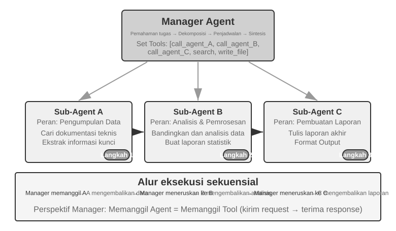
Manager memanggil Agent-agent khusus (specialized Agents) secara berurutan. Setiap Agent mengembalikan hasil setelah selesai, dan Manager memutuskan langkah selanjutnya. Control flow-nya linier, sederhana, dan jelas, membuatnya cocok untuk skenario di mana sub-tugas memiliki dependensi sekuensial yang jelas.
Eksperimen 10-3 ★★: Book Translation Agent
Terjemahan buku (Book translation) adalah tugas kompleks yang sangat cocok untuk kolaborasi multi-agent (multi-agent collaboration). Menerjemahkan buku teknis melibatkan bukan hanya mengonversi teks dari satu bahasa ke bahasa lain, tetapi juga memastikan terminologi khusus yang konsisten, akurasi kontekstual, dan kelancaran (fluency) secara keseluruhan. Misalnya, sebuah buku bahasa Inggris tentang large language models mungkin menggunakan banyak istilah berulang dengan beberapa terjemahan konvensional. Konsistensi harus dipertahankan di seluruh buku: jika
agentditerjemahkan sebagai "智能体" ("entitas cerdas", istilah bahasa Mandarin standar) di Bab 1, buku tersebut tidak dapat beralih ke terjemahan alternatif "代理" ("proksi") nanti.Menggunakan Agent tunggal menciptakan masalah manajemen konteks yang serius. Seiring Agent memproses buku bab demi bab, konteksnya mengakumulasi glosarium buku lengkap (full-book glossary), bab-bab yang telah diterjemahkan, paragraf saat ini, jejak pekerjaan (work traces) terjemahan, dan hasil alat (tool results). Sebuah buku teknis setebal beberapa ratus halaman, bersama dengan materi-materi perantara ini, dapat dengan mudah melampaui context window. Lebih kritis lagi, sebuah Agent yang bekerja dengan konteks yang terlalu panjang rentan terhadap "tersesat": ia mungkin melupakan konvensi terminologi sebelumnya dan menggunakan terjemahan yang berbeda di Bab 8 daripada di Bab 2, membuang sumber daya untuk pemeriksaan redundan selama proofreading, atau bahkan "mengingat" aturan terminologi yang tidak ada karena perhatiannya (attention) tersebar terlalu tipis.
Pola manajer (manager pattern) mengatasi masalah ini melalui dekomposisi tugas (task decomposition) dan pemisahan tanggung jawab (responsibility separation):
- Glossary Agent: Menerima buku lengkap, mengidentifikasi istilah khusus (specialized terms) yang berulang, berkonsultasi dengan kamus spesialis dan panduan terjemahan, dan menghasilkan glosarium terstruktur (format JSON/CSV, termasuk istilah bahasa Inggris, terjemahan, kelas kata (part of speech), dan konteks penggunaan). Setelah selesai, ia menulis glosarium ke file system bersama, dan Agent dapat dihancurkan untuk melepaskan sumber daya.
- Translation Agent: Menerima bab saat ini, glosarium, dan panduan terjemahan (tingkat pembaca target, gaya bahasa), dan menerjemahkannya ke dalam bahasa yang fasih. Ia secara ketat menggunakan terjemahan yang ditentukan untuk istilah-istilah di glosarium, dan untuk istilah baru, ia menyimpulkan (infers) terjemahan dan menandainya untuk ditinjau (review). Setiap instance bekerja dalam konteks independen tanpa gangguan. Teks yang diterjemahkan ditulis ke file system (misalnya,
chapter1_zh.md). Manager dapat meluncurkan beberapa instance secara paralel atau sekuensial.- Proofreading Agent: Menerima semua teks yang diterjemahkan dan glosarium, melakukan pemeriksaan konsistensi (consistency checks)—memverifikasi apakah terjemahan istilah seragam, mengidentifikasi ketidakkonsistenan, dan memeriksa kelancaran (fluency) dan keterbacaan (readability) secara keseluruhan. Ia menghasilkan proofreading report yang ditulis ke file system.
- Manager Agent: Konteksnya terutama menyimpan deskripsi tugas, rencana eksekusi (execution plan), catatan pemanggilan (call records) untuk setiap Agent, dan status kemajuan. Ia tidak menyimpan teks lengkap yang diterjemahkan, yang tetap berada di file system; sebagai gantinya, ia hanya mempertahankan indeks (index) dari file-file tersebut. Berdasarkan proofreading report, Manager dapat mengirim bab tertentu kembali ke Translation Agent untuk direvisi.
Hasilnya, konteks Manager tetap dapat dikelola bahkan ketika jumlah bab yang diterjemahkan bertambah.
Keuntungan utamanya adalah isolasi konteks (context isolation): Glossary Agent hanya melihat konten yang dibutuhkan untuk ekstraksi istilah, Translation Agent hanya melihat bab saat ini dan glosarium, dan Proofreading Agent, meskipun membutuhkan akses ke teks lengkap, hanya berfokus pada pemeriksaan konsistensi. Ini menjaga konteks setiap Agent tetap ramping (lean) dan terfokus, meningkatkan efisiensi dan mengurangi kesalahan yang disebabkan oleh information overload.
Persyaratan Eksperimen: 1. Pilih buku teknis bergambar tebal yang berisi kode sebagai teks sumber (source text) 2. Implementasikan empat jenis Agent: Manager, Glossary, Translation, Proofreading 3. Catat penggunaan konteks setiap Agent untuk memverifikasi seberapa efektif pola manajer mengendalikan pertumbuhan konteks 4. Bandingkan Agent tunggal dengan pola manajer dalam hal kualitas terjemahan, efisiensi eksekusi, dan konsumsi sumber daya
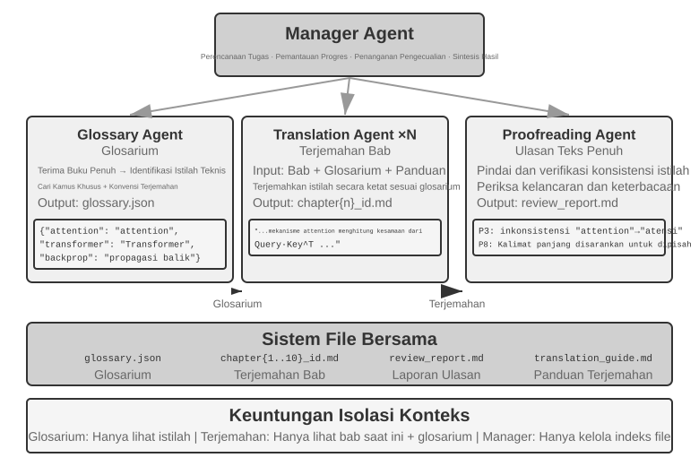
Pola Koordinasi Paralel (Parallel Coordination Pattern).
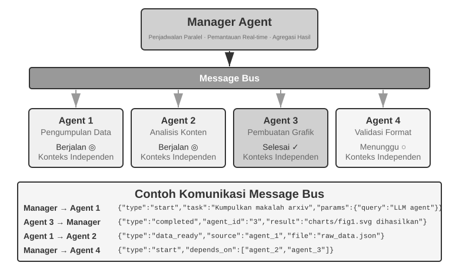
Ketika beberapa sub-tugas (subtasks) dapat berjalan secara paralel, pola sekuensial (sequential pattern) menjadi tidak efisien. Koordinasi paralel memungkinkan beberapa Agent untuk bekerja secara bersamaan (simultaneously), yang secara signifikan meningkatkan throughput. Manager Agent harus merencanakan tugas paralel, memonitor semua Agent yang berjalan secara real time, mengoordinasikan komunikasi mereka, dan membuat keputusan di tingkat sistem (system-wide decisions) ketika Agent berhasil atau gagal. Ini biasanya membutuhkan sebuah message bus sebagai infrastruktur—anggap saja sebagai "papan buletin publik" di mana Agent-agent dapat menerbitkan pesan (publish messages) dan berlangganan (subscribe) ke tipe pesan yang menarik minat mereka, memungkinkan komunikasi asinkron (asynchronous, non-blocking communication). Dua implementasi umum, dari yang lebih sederhana hingga yang lebih kompleks, adalah Redis Pub/Sub dan message queues seperti RabbitMQ. Redis Pub/Sub bersifat ringan (lightweight) dan segera mengirimkan pesan, tetapi tidak menyimpannya (persist), sehingga penerima yang sedang offline akan kehilangannya. RabbitMQ dan sistem serupa menyimpan pesan ke disk (persist messages to disk), menjaganya tetap utuh ketika penerima sedang offline sementara waktu. Pesan biasanya menggunakan amplop JSON (JSON envelope) yang berisi sender ID, target Agent (atau penanda siaran (broadcast marker)), tipe pesan, dan payload.
Lingtai: Sebuah Instansiasi Produk dari Pola Manajer. Lingtai adalah rumah berbasis file lokal untuk long-lived agents9. Tiga perannya sangat cocok dipetakan ke konsep di bagian ini. Main agent adalah hub persisten (persistent hub) yang berinteraksi dengan pengguna; ia memegang rencana (plan) dan memori dan melahirkan (spawns) peran lain, menempati posisi Manager Agent. Sebuah daemon adalah pekerja paralel berumur pendek (short-lived parallel worker) yang dilahirkan untuk tugas yang bising dan terbatas, lalu dibuang sesudahnya; hanya kesimpulannya yang dipertahankan. Ini merupakan perwujudan produk dari prinsip bahwa sub-agent mengembalikan ringkasan terstruktur (structured summaries) alih-alih lintasan penuh (full trajectories) dan pola koordinasi paralel (parallel coordination pattern). Sebuah avatar adalah rekan satu tim (teammate) khusus persisten (persistent) yang memiliki memori, kotak surat (mailbox), dan tanggung jawabnya sendiri, dirancang untuk keahlian (specialties) yang layak dipertahankan di seluruh sesi.
Sisa dari desain Lingtai juga menggemakan bagian-bagian sebelumnya. Pengetahuan (knowledge) hidup di dalam file memori pribadi (private memory files) masing-masing agent yang tahan lama (durable), sementara skills adalah playbook Markdown yang dibagikan oleh semua agent—sumber daya sistem (system resources) bawaan yang dijelaskan dalam "The File System from an Agent's Perspective". Ketika context window agent penuh, ia akan melakukan molt (ganti kulit): ia menulis ringkasan yang cermat, lalu memulai dengan konteks yang segar (fresh context) sambil mempertahankan ringkasan itu dan memori tahannya, mengikuti pendekatan kompresi konteks (context-compression approach) dari Bab 2. Model yang mendasarinya (underlying model) dapat diganti tanpa mengubah agent karena identitas, memori, dan kemampuannya semua hidup sebagai plain files di direktori proyek. Dalam pengertian ini, agent adalah file-filenya. Ini merupakan perwujudan produk dari dua baris pertama dari Tabel 10-3: program dan memori sama-sama direduksi menjadi file, sehingga prosesnya dapat dibangun kembali kapan saja.
Eksperimen 10-4 ★★★: Agent Berbicara di Telepon Sambil Menggunakan Komputer
Prasyarat (Prerequisites): Eksperimen ini mengintegrasikan teknologi Computer Use dan Voice Agent dari Bab 9. Disarankan agar pembaca menyelesaikan eksperimen Bab 9 yang relevan terlebih dahulu.
Banyak tugas di dunia nyata yang membutuhkan beberapa kemampuan untuk beroperasi secara bersamaan (concurrently) alih-alih berurutan. Seorang asisten manusia, misalnya, mungkin berbicara dengan klien sambil mencari dokumen dan membuat catatan. Meminta satu Agent untuk mengelola percakapan waktu nyata dan interaksi komputer membutuhkan peralihan tugas secara terus-menerus, yang dapat mengganggu kedua aktivitas tersebut. Sistem multi-agent sebagai gantinya menugaskan setiap tugas yang sensitif terhadap latensi ke Agent khusus dan mengoordinasikannya melalui pesan asinkron. Phone Agent membutuhkan pengenalan dan sintesis ucapan dengan latensi rendah, sedangkan Computer Agent membutuhkan pemahaman visual yang kuat dan kemampuan perencanaan tindakan.
Skenario: Sebuah AI Agent membantu pengguna mengisi formulir pemesanan penerbangan yang kompleks. Agent harus mengoperasikan halaman web sambil menanyakan dan mengonfirmasi informasi pribadi pengguna (nama, nomor identitas, preferensi penerbangan, dll.) melalui telepon. Baik percakapan telepon maupun interaksi web harus tetap responsif, menjadikannya kasus klasik di mana satu Agent akan kesulitan tetapi sistem dual-agent memungkinkan setiap Agent untuk fokus pada satu peran.
Arsitektur Dual-Agent:
Phone Agent: Sebuah Agent suara yang dibangun dengan ASR, LLM, dan TTS. Agent ini menginterpretasikan respons bahasa alami dari pengguna, mengekstrak informasi penting, dan mengirimkan informasi tersebut ke Computer Agent melalui sistem pesan. Agent ini juga menerima pesan dari Computer Agent (misalnya, "Butuh nomor identitas pengguna," "Terjadi kesalahan pemuatan halaman") dan merespons pengguna dengan tepat.
Computer Agent: Menggunakan kerangka kerja otomatisasi peramban seperti Anthropic Computer Use atau
browser-useuntuk menginterpretasikan halaman, mengidentifikasi dan mengisi bidang formulir, dan meminta bantuan dari Phone Agent ketika diperlukan.Mekanisme Komunikasi: Dua opsi: - Solusi Sederhana: Komunikasi point-to-point melalui pemanggilan tool (tool calls), mis.,
send_message_to_computer_agent(message)/send_message_to_phone_agent(message)- Solusi Lengkap: Message bus + Manager Agent, dengan format pesan terpadu yang mencakup pengirim, penerima, jenis, dan kontenMekanisme Kolaborasi Paralel (dibagikan oleh dua eksperimen "Phone + Computer" di bab ini): Kedua Agent berjalan di thread atau proses yang terpisah, masing-masing mempertahankan loop ReAct yang independen. Phone Agent secara berulang menerima audio, mentranskripsinya dengan ASR, menghasilkan respons dengan LLM, menyintesis respons dengan TTS, memutarnya, dan memeriksa pesan dari Computer Agent. Computer Agent secara berulang menangkap tangkapan layar, menginterpretasikan halaman dengan model bahasa-visi (vision-language model), merencanakan dan mengeksekusi tindakan, dan memeriksa pesan dari Phone Agent. Keduanya harus berjalan secara paralel: saat Computer Agent mencari elemen dan memasukkan teks, Phone Agent harus tetap daring dan berinteraksi dengan pengguna ("Oke, saya sedang mengisi nama Anda... Boleh saya tahu berapa nomor identitas Anda?"). Pesan dari Agent lain dapat disertakan dalam konteks (context) Agent penerima dengan label seperti
[FROM_COMPUTER_AGENT] Cannot find the 'Next' button; user confirmation might be neededdan[FROM_PHONE_AGENT] User said name is 'Zhang San'; ID number is 123456.Persyaratan Eksperimen: 1. Terapkan arsitektur dual-agent berdasarkan API ASR/TTS dan kerangka kerja operasi peramban 2. Terapkan mekanisme komunikasi dua arah yang efisien 3. Pastikan operasi yang benar-benar paralel, dengan pengumpulan informasi dan pengisian formulir terjadi secara bersamaan 4. Tangani pengecualian dan kasus kesalahan
Eksperimen 10-5 ★★★: Phone Agent dan Computer Agent yang Dikoordinasikan Secara Otonom
Pada Eksperimen 10-4, kolaborasi dual-agent dirancang sebelumnya. Eksperimen ini melangkah lebih jauh dengan mengeksplorasi orkestrasi Agent otonom: Agent itu sendiri yang memutuskan kapan harus meluncurkan kolaborator alih-alih mengikuti alur yang direncanakan oleh manusia.
Skenario: Pengguna meminta, "Bantu saya menyelesaikan pendaftaran di situs web ini," dengan memberikan URL tanpa menyebutkan informasi apa yang perlu diisi. Manager Agent meluncurkan Computer Use Agent untuk mengakses situs web dan memuat halaman pendaftaran.
Selama operasi, Computer Use Agent menemukan bahwa formulir pendaftarannya sangat kompleks, berisi banyak kolom yang wajib diisi: informasi pribadi dasar (nama, jenis kelamin, tanggal lahir), detail kontak (nomor telepon, email, alamat surat), informasi verifikasi identitas (jenis identitas, nomor identitas), pengaturan preferensi, dll. Setelah memeriksa konteksnya (context), Agent menyadari bahwa ia tidak memiliki informasi ini—pengguna hanya mengatakan "bantu saya mendaftar" tanpa memberikan data spesifik apa pun.
Agent konvensional akan meminta pengguna untuk memasukkan informasi tersebut di obrolan. Ini tidak efisien untuk data dalam jumlah besar dan meningkatkan risiko kesalahan format atau penghilangan. Agent yang lebih cerdas harus menyadari bahwa skenario ini lebih cocok untuk mengumpulkan informasi melalui telepon. Percakapan telepon mendukung pertanyaan dan konfirmasi berurutan serta memudahkan klarifikasi atas jawaban yang ambigu.
Inovasi utamanya adalah keputusan ini tidak diprogram sebelumnya, melainkan dibuat secara otonom oleh Agent. Prompt Computer Use Agent menyatakan: "Ketika Anda perlu mengumpulkan sejumlah besar informasi terstruktur dari pengguna, dan ini dapat dilakukan secara progresif melalui percakapan, pertimbangkan untuk memanggil Phone Agent sebagai tool bantuan." Set tool tersebut mencakup
initiate_phone_call_agent(purpose, required_info).Memanggil tool tersebut akan membuat Phone Agent dengan konteks tugas yang jelas yang mengidentifikasi tujuan pengisian formulir, informasi yang akan dikumpulkan, dan persyaratan pemformatan untuk setiap bidang.
Kedua Agent kemudian memasuki mode kolaborasi waktu nyata yang asinkron dari Eksperimen 10-4. Phone Agent menanyakan satu pertanyaan pada satu waktu: "Halo, saya sedang membantu Anda mengisi formulir pendaftaran. Pertama-tama, bolehkah saya mengetahui nama Anda?" Setelah pengguna merespons, ia segera mengirimkan
{"type": "info_collected", "field": "Name", "value": "Zhang San"}ke Computer Agent, yang kemudian mencari dan mengisi kolom yang sesuai. Phone Agent melanjutkan dengan pertanyaan berikutnya tanpa menunggu operasi komputer selesai. Alur kerja tanya-satu, isi-satu ini mencegah penundaan operasional agar tidak memblokir percakapan. Setelah mengumpulkan semua informasi yang diperlukan, Phone Agent mengirimkan{"type": "task_completed"}, dan Computer Agent mengirimkan formulir.Persyaratan Eksperimen: 1. Terapkan Computer Use Agent yang mampu memutuskan secara otonom untuk meluncurkan Phone Agent 2. Terapkan komunikasi dua arah waktu nyata dan kerja paralel yang sebenarnya 3. Tangani pengecualian dengan memberikan umpan balik dan bertanya lagi ketika informasi berada dalam format yang salah 4. Catat stempel waktu (timestamp) untuk pesan yang dipertukarkan dan catat keputusan-keputusan penting para Agent
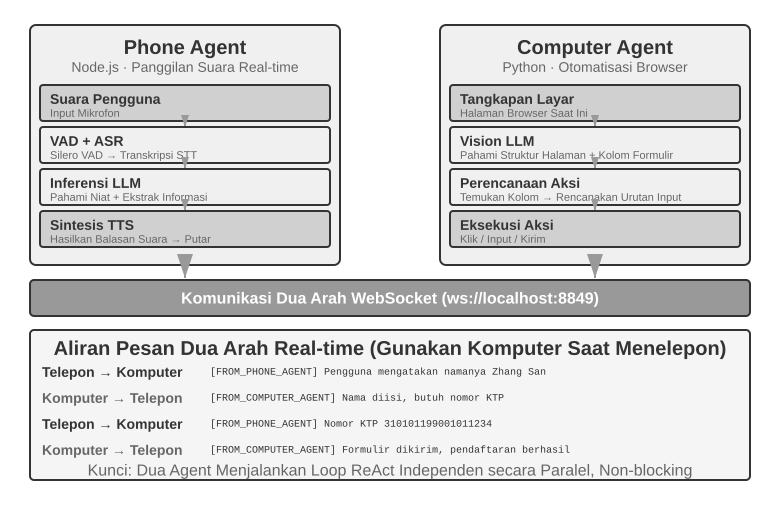
Eksperimen 10-6 ★★★: Agent Mengumpulkan Informasi dari Banyak Situs Web Secara Bersamaan
Prasyarat: Disarankan agar pembaca terlebih dahulu meninjau mekanisme event-driven dan interupsi dari Bab 4.
Eksperimen ini mengeksplorasi penerapan eksekusi paralel multi-agent dalam skenario pengumpulan informasi. Tidak seperti Eksperimen 10-4 dan 10-5, yang berfokus pada kolaborasi dua Agent heterogen, eksperimen ini berfokus pada pencarian paralel oleh beberapa Agent homogen dan bagaimana mencapai penyelesaian tugas yang efisien serta pengoptimalan sumber daya melalui koordinasi terpusat.
Masalah: Diberikan situs web direktori fakultas untuk beberapa perguruan tinggi (fakultas) dalam sebuah universitas, cari anggota fakultas (dosen) yang ditentukan (misalnya, "Zhang Wei") di setiap situs. Jika ditemukan, kembalikan fakultas orang tersebut, jabatan, area penelitian, dan informasi relevan lainnya.
Tantangan Inti:
1. Peluncuran Paralel: Manager Agent secara dinamis membuat 10 instans Computer Use Agent, satu untuk setiap situs web fakultas. Setiap instans harus berupa proses atau thread yang independen dengan sesi perambannya sendiri, yang mampu berjalan tanpa memblokir yang lain. Parameter yang diteruskan saat peluncuran mencakup URL situs web target, nama anggota fakultas yang dicari, dan pengenal tugas untuk perutean pesan.
2. Pemantauan Waktu Nyata: Setiap Agent secara berkala mengirimkan pembaruan status selama eksekusi ("Memuat situs web," "Mengurai direktori fakultas," "Target tidak ditemukan; tugas selesai," "Kecocokan ditemukan; detail di bawah"). Manager Agent menerima pembaruan ini melalui message bus, mengelola tabel status tugas, dan melacak secara real-time Agent mana yang sedang berjalan, telah selesai, atau berada dalam keadaan error.
3. Cascading Termination: Misalkan Agent yang ditugaskan di fakultas Ilmu Komputer menemukan anggota fakultas tersebut. Agent itu mengirimkan
{"type": "target_found", "agent_id": "agent_3", "data": {...}}ke Manager Agent, yang kemudian segera mengirimkan{"type": "terminate", "reason": "target_found_by_agent_3"}ke setiap Agent lain yang masih berjalan. Setiap Agent harus dapat menerima pesan ini kapan saja, berhenti dengan lancar (gracefully), melepaskan sumber dayanya, dan mengonfirmasi penghentian. Manager Agent menunggu semua konfirmasi, atau sampai batas waktu habis (timeout), sebelum mengumpulkan (aggregating) hasilnya. Implementasinya juga harus menangani kondisi balapan (race conditions).Suplemen Konsep: Apa itu Race Condition? Misalkan Agent A dan Agent B menemukan target anggota fakultas dalam milidetik yang sama dan keduanya melaporkan "Saya menemukannya!" kepada Manager Agent. Jika Manager menanganinya dengan buruk, ia mungkin mulai mengumpulkan hasil setelah menerima laporan Agent A, kemudian memulai pengumpulan kedua ketika laporan Agent B tiba. Hal ini dapat menghasilkan hasil ganda atau keadaan yang saling bertentangan. Solusi yang biasa digunakan adalah kunci (lock): laporan pertama mengunci (locks) status, dan laporan yang datang belakangan dikenali sebagai duplikat dan diabaikan.
4. Penanganan Kegagalan: Berbagai pengecualian dapat terjadi selama operasi: situs web fakultas mungkin tidak dapat diakses karena kesalahan atau pemadaman jaringan, atau strukturnya mungkin mencegah Agent untuk mengurainya dengan benar. Semua Agent juga dapat menyelesaikan pencarian mereka tanpa menemukan target. Manager Agent harus menetapkan batas waktu (timeout) untuk setiap Agent (misalnya, 2 menit), memperlakukan batas waktu sebagai kegagalan, dan mengisolasi error sehingga tidak mengganggu Agent lainnya. Setelah semua Agent selesai, kembalikan informasi jika ada Agent yang menemukan target; jika tidak, laporkan "Target anggota fakultas tidak ditemukan" dan ringkas kegagalan apa pun.
Persyaratan Eksperimen: 1. Terapkan Manager Agent yang mampu meluncurkan beberapa Agent paralel secara dinamis 2. Terapkan Computer Use Agent berdasarkan proyek open-source seperti
browser-use3. Terapkan message bus yang mendukung komunikasi dua arah antara Manager Agent dan beberapa Agent anak 4. Terapkan mekanisme penghentian berjenjang (cascading termination) saat berhasil, pastikan semua Agent lain berhenti dengan cepat setelah target ditemukan 5. Tangani berbagai skenario pengecualian (kegagalan akses situs web, error penguraian, target tidak ditemukan oleh Agent mana pun) 6. Ukur dan bandingkan waktu eksekusi serial dan paralel untuk mengukur peningkatan kecepatan dari paralelisasi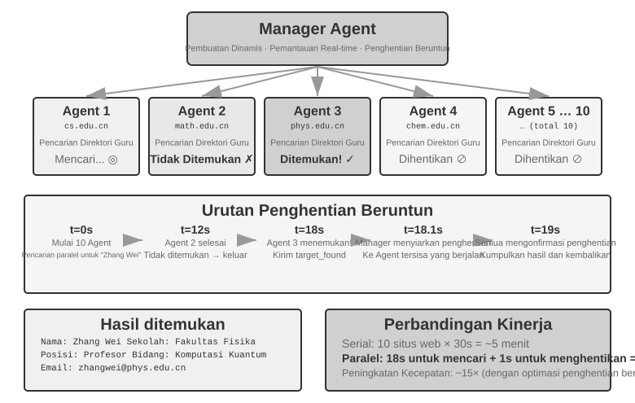
Pola Terdesentralisasi: Peer-to-Peer Handoff¶
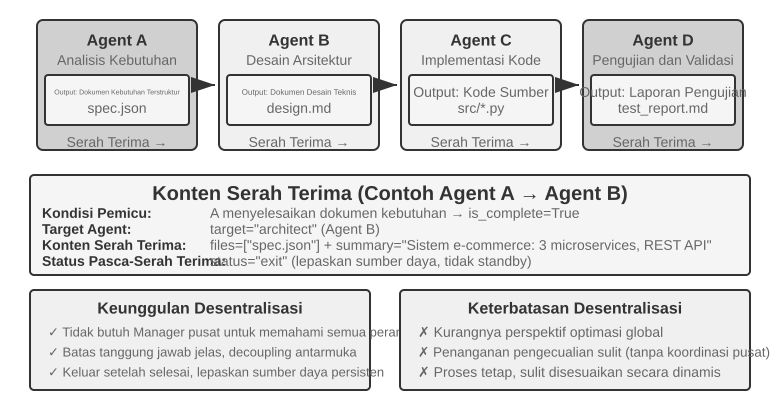
Pola manajer memberikan struktur kontrol yang jelas dan visibilitas global, tetapi pola terdesentralisasi bukan sekadar perbaikan atas kekurangannya. Motivasi untuk menghilangkan pengontrol terpusat utamanya adalah untuk meniru cara masyarakat manusia mengatur dirinya sendiri: membiarkan beberapa peran setara (peer) membagi kerja dan memeriksa satu sama lain, masing-masing meneliti masalah dari perspektif profesionalnya sendiri dan memutuskan sendiri dengan siapa ia harus berbicara, daripada menyalurkan setiap penilaian ke satu Manager. Bidang layanan mikro (microservices) menyebut sepasang pilihan ini orkestrasi (orchestration) dan koreografi (choreography): yang pertama memiliki konduktor yang menjadwalkan semuanya secara terpusat, yang terakhir bergantung pada setiap penari yang merasakan sendiri kapan harus masuk.
Pola terdesentralisasi mengambil pendekatan arsitektur yang berbeda: tidak ada pengontrol pusat tunggal; Agent berkolaborasi sebagai rekan (peers). Setiap Agent, dengan memanfaatkan penilaian profesionalnya sendiri, memutuskan sendiri kapan harus menghubungi Agent lain—untuk menyerahkan tugas (hand off) ("Bagian saya sudah selesai, sekarang giliran Anda"), meminta umpan balik ("Apakah rencana ini layak secara teknis?"), atau melaporkan masalah ("Persyaratan yang Anda berikan kepada saya saling bertentangan; kita perlu membicarakan ini lagi").
Kasus-kasus berikut berkembang dari desentralisasi parsial menuju desentralisasi penuh. MetaGPT menggunakan alur kerja (pipeline) tetap dan hanya mendesentralisasikan komunikasi. AutoGen menggabungkan riwayat percakapan bersama dengan penjadwalan terpusat. OpenAI Swarm mendistribusikan keputusan aliran kontrol (control-flow) secara langsung di antara sesama Agent.
Apa yang diteruskan selama penyerahan (handoff) tanpa konteks bersama? Gambar 10-10 membedakan dua jenis penyerahan. Dalam Eksperimen 10-2, transfer_to_agent menggunakan konteks bersama, sehingga peran baru secara otomatis mewarisi riwayat lengkap. Dalam pola rantai-penyerahan (handoff-chain), konteks (context) tidak dibagikan, sehingga Agent pengirim harus secara eksplisit menyusun informasi yang dibutuhkan oleh Agent penerima.
Praktiknya, "paket penyerahan" (handoff package) yang efektif biasanya berisi tiga bagian: Deskripsi Tugas (apa yang harus dilakukan penerima dan kriteria penerimaannya), Fakta dan Kendala yang Dikonfirmasi (preferensi pengguna, aturan bisnis, dan keputusan yang dibuat pada tahap sebelumnya), dan Referensi ke Artefak Terstruktur (jalur file, bukan konten file, yang dibaca penerima sesuai kebutuhan). Paket tersebut dengan sengaja mengecualikan lintasan (trajectory) penuhnya—proses uji-coba Agent pengirim, pekerjaan menengah, dan upaya yang gagal—yang sebagian besar merupakan derau (noise) bagi penerima.
Inilah perbedaan esensial antara kedua jenis penyerahan tersebut. Handoff dengan konteks bersama (shared context) menyimpan riwayat lengkap, mempertahankan semua informasi tetapi terus-menerus memperluas konteks. Handoff tanpa konteks bersama memberikan paket yang telah diolah, menerima beberapa kehilangan informasi sehingga setiap Agent dapat bekerja dalam konteks yang bersih dan terfokus. Tidak ada Agent yang perlu memahami proses kerja Agent lain; Agent hanya membutuhkan format dan makna dari paket handoff serta artefak keluarannya. Kolaborasi berbasis antarmuka (interface) ini mengacu pada prinsip rekayasa perangkat lunak design by contract.
MetaGPT: Simulasi Perusahaan Perangkat Lunak Berbasis SOP (Kasus Transisi dari Pipeline ke Decoupled Communication).
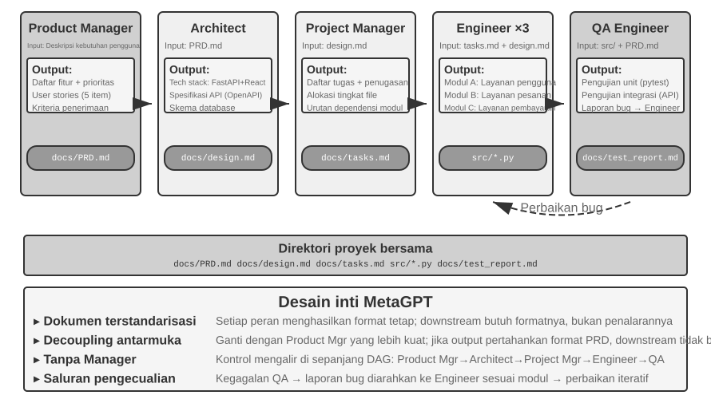
Wawasan inti MetaGPT adalah bahwa Standard Operating Procedures (SOP) yang dikembangkan dan disempurnakan oleh perusahaan perangkat lunak dapat berfungsi sebagai protokol kolaborasi untuk sistem multi-agent. Mengodekan SOP ini memungkinkan setiap peran, seperti pekerja khusus di jalur perakitan, untuk menghasilkan deliverables standar, dan deliverables tersebut secara alami menjadi antarmuka komunikasi antar peran.
Di MetaGPT, peran-peran bekerja dalam urutan tetap (Product Manager → Architect → Project Manager → Engineer → QA), dengan setiap peran menghasilkan deliverables terstruktur:
- Product Manager Agent: Menerima deskripsi kebutuhan, menghasilkan PRD (Product Requirements Document, termasuk daftar fitur, user stories, kriteria penerimaan, peringkat prioritas) terstruktur
- Architect Agent: Membaca PRD, membuat keputusan arsitektur (pemilihan technology stack, pembagian modul, definisi antarmuka, desain model data), menghasilkan dokumen desain
- Project Manager Agent: Membaca desain arsitektur, mendekomposisi sistem menjadi daftar tugas spesifik dan penugasan tingkat file, memperjelas urutan ketergantungan modul, dan kemudian memberikan tugas kepada para engineer
- Engineer Agents: Membaca dokumen desain, mengimplementasikan modul yang ditugaskan kepada mereka, menghasilkan kode. Beberapa instance dapat bekerja secara paralel.
- QA Engineer Agent: Membaca kode dan PRD, menghasilkan test cases, mengeksekusi tes, mencatat bugs, menghasilkan laporan pengujian
Kontribusi nyata MetaGPT pada komunikasi terdesentralisasi terletak pada mekanisme penyampaian informasinya: Shared Message Pool + Subscription by Role. Setiap peran memublikasikan pesan terstruktur ke dalam pool yang terlihat oleh semua peran. Berdasarkan konfigurasi subscription mereka, peran lain hanya mengonsumsi pesan yang relevan dengan tanggung jawab mereka alih-alih berkomunikasi secara point-to-point. Penerbit tidak perlu tahu siapa yang akan mengonsumsi output-nya. Untuk menambahkan peran, deklarasikan jenis pesan yang di-subscribe; peran yang sudah ada tidak perlu berubah. Hal ini menciptakan decoupling yang sesungguhnya: misalnya, mengganti Product Manager dengan model yang lebih kuat tidak memerlukan perubahan pada Agent lain, selama PRD-nya masih sesuai dengan spesifikasi.
Peningkatan iteratif MetaGPT terjadi terutama pada fase rekayasa melalui executable feedback. Engineer menjalankan kode dan pengujiannya, menggunakan kesalahan dan kegagalan untuk memandu debugging loop, dan berlanjut hingga pengujian lulus. Koreksi didorong oleh hasil eksekusi deterministik alih-alih pendapat Agent lain.
Untuk memperjelas, MetaGPT tidak terdesentralisasi dalam hal control flow—urutan peran telah ditentukan sebelumnya oleh SOP, membuat sistem secara keseluruhan lebih dekat ke jalur perakitan (sebuah workflow dalam bahasa Bab 1). Hal ini dibahas di bagian ini karena mekanisme komunikasi message pool plus subscription mendemonstrasikan elemen desain paling kritis dari sistem terdesentralisasi: decoupling. Adapun dynamic feedback multi-arah seperti "QA langsung menghubungi Product Manager untuk mengklarifikasi kebutuhan" atau "Engineer mendiskusikan solusi alternatif dengan Architect," ini adalah ekstensi alami yang dibayangkan untuk arsitektur ini tetapi tidak diimplementasikan pada MetaGPT versi awal.
AutoGen Group Chat: Shared Conversation History + Centralized Scheduling. Group chat AutoGen memungkinkan beberapa Agent berpartisipasi dalam percakapan yang sama. Di setiap putaran, "speaker selector" memutuskan Agent mana yang berbicara selanjutnya. Selektor dapat mengikuti aturan round-robin sederhana atau menggunakan LLM untuk menentukan Agent mana yang paling cocok untuk merespons berdasarkan percakapan sejauh ini. Kontribusi setiap Agent terlihat oleh semua peserta.
Hal ini tidak sepenuhnya terdesentralisasi dalam hal control flow: sebuah GroupChatManager memilih pembicara secara terpusat, dan memutuskan giliran siapa yang berbicara merupakan keputusan control-flow. Oleh karena itu, klasifikasi yang lebih akurat adalah shared conversation history + centralized scheduling. Semua Agent melihat riwayat publik yang sama, tetapi masing-masing mempertahankan System Prompt dan set tool yang independen, sementara selektor memegang otoritas penjadwalan.
Model ini cocok untuk tugas yang membutuhkan diskusi dari beberapa perspektif dan yang urutan bicaranya tidak dapat ditentukan sebelumnya, seperti tinjauan rencana atau analisis lintas domain. Namun, percakapan dapat menyimpang: setiap Agent mungkin terus berbicara tanpa kelompok membuat kemajuan, sebuah bentuk livelock. Oleh karena itu, kondisi penghentian yang jelas sangat penting. Pada dimensi yang digunakan dalam bab ini, AutoGen adalah hibrida: penjadwalan terpusat, sementara konteks dibagikan secara parsial. Hal ini mengilustrasikan bahwa topologi dan pembagian konteks adalah dimensi desain yang independen.
OpenAI Swarm dan Agents SDK: Handoff Network. Sebaliknya, Swarm dari OpenAI dan penerusnya, Agents SDK, mewakili desentralisasi peer-to-peer dalam control flow. Setiap Agent memiliki beberapa opsi handoff dan dapat mentransfer kontrol ke Agent lain di jaringan kapan saja. Agent triase layanan pelanggan yang menentukan suatu masalah melibatkan pengembalian dana menyerahkan tugas tersebut ke Refund Agent; jika Agent tersebut menemukan kesalahan teknis, ia dapat menyerahkan tugas ke Technical Support Agent. Tidak ada scheduler terpusat. Kontrol berpindah seperti tongkat estafet di antara Agent rekanan (peer), dan setiap Agent membuat keputusan peruteannya sendiri. Ini adalah implementasi rekayasa dari pola handoff-chain pada Gambar 10-10. Risikonya adalah siklus: A menyerahkan ke B, dan B menyerahkan kembali ke A, membuat tugas berputar dalam loop. Sebuah penjaga (guard) seperti jumlah handoff maksimum diperlukan untuk memutuskannya.
Terminologi: Agent Swarm. Sejak tahun 2025, "Agent Swarm" telah menjadi kata kunci populer di kalangan vendor, tetapi istilah ini tidak merujuk pada satu arsitektur tunggal. Penggunaan di industri secara garis besar terbagi ke dalam dua kubu. Yang pertama adalah handoff network ala OpenAI Swarm (pustaka swarm LangGraph dan orkestrasi handoff dari Microsoft Agent Framework mengikuti gagasan yang sama)—yaitu pola terdesentralisasi yang dibahas di bagian ini. Yang kedua, yang ditemukan pada beberapa produk komersial utama, adalah pola manajer dalam skala besar: Agent Swarm yang memulai debutnya bersama Kimi K2.5 membuat main Agent secara dinamis menciptakan ratusan sub-agent untuk dieksekusi secara paralel, dengan keputusan orkestrasi "kapan memecah, dan menjadi berapa bagian" yang dilatih langsung ke dalam model melalui reinforcement learning Agent paralel; K3 melanjutkannya sebagai tingkatan model tersendiri, dan sandbox pelatihan Agent paralel pendampingnya, AgentEnv, telah di-open-source-kan.10 Sistem riset multi-agent milik Anthropic dan Wide Research dari Manus sama-sama termasuk dalam topologi bintang orchestrator-worker yang serupa. Harapan kami adalah, setelah membaca buku ini, pembaca dapat melihat menembus konsep hingga ke esensinya dan menganalisis sistem multi-agent dari prinsip-prinsip dasar (first principles).
Kolaborasi Lintas Organisasi: A2A Protocol¶
Semua sistem di atas mengasumsikan bahwa semua Agent dikembangkan oleh tim yang sama dan berjalan di dalam sistem yang sama. Dalam hal ini, ketiga mekanisme komunikasi—parameter passing, shared files, dan message bus—sudah cukup. Namun, ketika kolaborasi melintasi batas organisasi—Agent Anda perlu memanggil Agent perusahaan lain—sebuah protokol interoperabilitas standar diperlukan. Dunia proses mengikuti evolusi yang sama: IPC hanya mengatur satu mesin, dan begitu Anda melintasi batas mesin, Anda harus mengandalkan protokol standar seperti TCP/IP dan penemuan layanan (service discovery) seperti DNS. A2A bagi Agent ibarat protokol jaringan bagi proses. Protokol A2A (Agent2Agent) yang dirilis oleh Google pada tahun 2025 (kemudian didonasikan ke Linux Foundation untuk kepengurusan) dirancang tepat untuk tujuan ini. Protokol ini memiliki tiga elemen inti:
- Agent Card: Dokumen metadata yang mendeskripsikan kemampuan Agent (dipublikasikan di alamat publik yang ditentukan), mendeklarasikan apa yang dapat dilakukan Agent, modalitas input/output apa yang didukungnya, dan cara mengautentikasi dengannya—pada dasarnya "kartu nama" Agent yang memecahkan capability discovery lintas organisasi.
- Task Lifecycle Management: A2A memodelkan unit kolaborasi sebagai Tasks dengan mesin status (state machine) yang terdefinisi (submitted, in-progress, needs-input, completed, failed), secara native mendukung long-running tasks dan streaming progress updates.
- Opaque Collaboration: Agent hanya bertukar tugas dan artefak, tanpa mengekspos prompt internal, proses reasoning, atau implementasi tool—sejalan dengan prinsip bab ini yaitu "tidak berbagi konteks" dan properti keamanan yang diperlukan untuk kolaborasi lintas organisasi.
MCP memungkinkan interoperabilitas antara Agent dan tools, sedangkan A2A memungkinkan interoperabilitas antar Agent. A2A tidak menggantikan ketiga mekanisme komunikasi yang diperkenalkan dalam bab ini; ia menstandarkan komunikasi melintasi batas-batas kepercayaan. Sebuah message bus mungkin cukup di dalam satu organisasi, tetapi ketika pihak-pihak yang berkolaborasi tidak saling percaya dan tidak dapat memeriksa implementasi satu sama lain, mereka membutuhkan protokol publik seperti A2A.
Mode Kegagalan pada Kolaborasi Multi-Agent¶
Sistem multi-agent memperkenalkan mode kegagalan (failure modes) baru yang tidak ada pada sistem single-agent. Makalah tahun 2025 "Why Do Multi-Agent LLM Systems Fail?" mengusulkan taksonomi failure-mode MAST melalui studi sistematis. Para peneliti mengumpulkan jejak eksekusi dari tujuh framework multi-agent arus utama, termasuk MetaGPT, ChatDev, AG2, dan Magentic-One. Anotator manusia secara independen menganalisis sekitar 150 jejak, mencapai kesepakatan tinggi pada penilaian mereka (Cohen's kappa = 0.88). Studi ini mengidentifikasi 14 mode kegagalan unik dalam tiga kelompok:
- System Design Flaws: Masalah tingkat arsitektur seperti definisi antarmuka yang tidak jelas antar Agent, peran dan tanggung jawab yang tumpang tindih, dan konfigurasi tool yang salah.
- Inter-Agent Alignment Failures: Beberapa Agent memiliki pemahaman yang tidak konsisten tentang tujuan tugas, informasi yang dikirimkan disalahtafsirkan oleh Agent downstream, atau operasi dari beberapa Agent secara logis saling bertentangan.
- Missing Task Verification: Sistem kekurangan mekanisme yang efektif untuk mengonfirmasi apakah suatu tugas benar-benar selesai—seorang Agent mungkin mengklaim "selesai" tetapi hasil sebenarnya tidak memenuhi kebutuhan.
Bahkan perbaikan langsung (straightforward fixes) hanya menghasilkan keuntungan yang terbatas; misalnya, kinerja ChatDev yang diukur hanya meningkat sebesar 15,6%. Para peneliti menyimpulkan bahwa ini bukan sekadar bug rekayasa melainkan cacat desain fundamental dari arsitektur multi-agent saat ini: menambal (patching) satu komponen tidaklah cukup; desain sistem itu sendiri harus dipikirkan ulang.
Teori distributed fault-tolerance membedakan dua jenis kesalahan (faults): crash faults, di mana sebuah komponen berhenti bekerja, dan Byzantine faults, di mana ia terus beroperasi tetapi memberikan informasi yang salah. Sistem tradisional dirancang terutama untuk menahan crashes. Namun, kegagalan Agent sering kali bersifat Byzantine: Agent jarang berhenti secara langsung dan malah terus menghasilkan kesimpulan yang masuk akal tetapi salah, tanpa mengumumkan kesalahan tersebut. Ini menjelaskan mengapa menambal satu komponen menghasilkan hasil yang sangat sedikit: tidak ada komponen yang secara pasti akan mengekspos masalahnya, sehingga sistem harus menangkapnya melalui redundansi independen. Cross-validation dan pemungutan suara mayoritas (majority voting), yang berulang di sepanjang bab ini, adalah teknik klasik dari toleransi kesalahan Byzantine. Pengecekan deterministik seperti pengujian, compiler, dan kueri database sangat berharga karena memberikan bukti independen yang tidak bergantung pada penilaian model lain.
Bagian berikut berfokus pada dua mode kegagalan yang sangat umum dan destruktif dalam praktiknya: (1) konflik konkurensi pada shared file systems; (2) amplifikasi kesalahan secara beruntun (cascading amplification of errors). Perhatikan bahwa kedua mode kegagalan ini menekankan perspektif rekayasa (konkurensi sistem file, propagasi informasi yang salah lintas Agent) dan berfungsi sebagai suplemen untuk klasifikasi MAST, yang berfokus pada kegagalan kolaborasi berbasis dialog, bukan pernyataan ulang dari 14 modenya.
Mode Kegagalan Pertama: Konflik Konkurensi pada Shared File Systems¶
Begitu Anda memilih komunikasi bergaya shared-memory, konflik konkurensi akan menyertainya—sebuah masalah yang telah dipecahkan oleh sistem operasi dan database beberapa dekade lalu, dengan jawaban yang sudah tersedia (off the shelf). Konflik ini dapat dibagi menjadi dua jenis.
Simple Conflicts (File-Level Write Conflicts): Dua Agent memodifikasi file yang sama secara bersamaan, dan yang menulis belakangan akan menimpa (overwrite) perubahan yang dibuat oleh penulis sebelumnya. Ini adalah masalah lost update klasik dalam domain database—dan mekanisme deteksi konflik merge pada Git dirancang secara tepat untuk menangkap overwrite semacam itu.
Semantic Conflicts (Logical-Level Consistency Conflicts): Tidak ada konflik yang terlihat pada tingkat file, tetapi operasi dari beberapa Agent secara logis saling bertentangan—jenis konflik ini lebih tersembunyi dan lebih berbahaya. Misalnya: Agent A bertanggung jawab untuk menomori ulang semua gambar dalam sebuah buku, sementara Agent B secara bersamaan memodifikasi konten bab dan merujuk gambar berdasarkan nomor aslinya. Keduanya beroperasi pada file yang berbeda, sehingga tidak ada konflik pada tingkat file. Namun, hasilnya adalah semua nomor gambar yang dirujuk oleh Agent B menjadi tidak valid setelah Agent A menyelesaikan penomoran ulang, dan pembaca melihat referensi gambar yang salah.
Solusi: Mekanisme Optimistic Locking. Ini adalah strategi concurrency-control yang umum di database. Untuk memahaminya, pertimbangkan contoh sehari-hari: Anda dan rekan kerja membuka dokumen online yang sama secara bersamaan. Sebuah "pessimistic lock" akan mengunci dokumen saat Anda membukanya, dan rekan Anda akan melihat "file terkunci" saat mencoba mengedit. Ini aman tetapi tidak efisien karena Anda mungkin hanya melihat dokumen tersebut. Sebuah "optimistic lock" lebih fleksibel: semua orang dapat membuka dan mengedit dengan bebas, tetapi saat menyimpan, sistem bertanya, "Apakah ada orang lain yang memodifikasi dokumen sejak Anda membukanya?" Jika ya, sistem meminta Anda untuk refresh dan mencoba lagi.
Implementasi spesifiknya adalah: setiap file memelihara nomor versi (atau timestamp modifikasi terakhir). Saat Agent membaca sebuah file, ia mencatat nomor versi saat ini; saat menulis, ia memeriksa apakah nomor versinya masih sama dengan saat dibaca. Jika file tersebut telah dimodifikasi oleh Agent lain dalam rentang waktu tersebut, penulisan gagal, dan Agent dipaksa untuk membaca ulang versi terbaru dan mengeksekusi ulang operasinya berdasarkan versi tersebut. Biaya dari mekanisme ini adalah pengulangan (retries) sesekali, tetapi ini memastikan konsistensi data—Agent tidak pernah membuat keputusan berdasarkan status file yang sudah usang.
Perhatikan bahwa optimistic locking hanya dapat mencegah write conflicts pada file yang sama. Untuk cross-file semantic conflicts yang disebutkan sebelumnya (misalnya, nomor gambar yang dirujuk di beberapa tempat), diperlukan koordinasi tingkat tinggi atau validasi semantik, seperti menghindari modifikasi paralel pada file-file yang bergantung satu sama lain atau menjalankan global consistency check setelah penulisan.
Misalnya, Agent A membaca config.json (versi=3) pada t=0. Agent B memodifikasi file yang sama pada t=1, mengubah versinya menjadi 4. Saat Agent A mencoba menulis pada t=2, ia menemukan bahwa versinya bukan lagi 3, sehingga penulisan ditolak. Agent A kemudian membaca ulang versi 4, merekonstruksi perubahannya terhadap konten terbaru, dan mencoba menulis lagi.
Ketika beberapa Coding Agents memodifikasi codebase yang sama secara bersamaan, pendekatan standar industri bukanlah mengunci satu working copy tetapi menggunakan working-copy isolation. Setiap Agent menerima branch Git atau worktree independen dan memodifikasi salinannya sendiri tanpa mengganggu yang lain. Konflik ditunda hingga merge akhir, di mana proses khusus atau manusia menyelesaikannya. Mekanisme copy-on-write yang digunakan saat sistem operasi melakukan fork pada sebuah proses mengikuti gagasan yang sama. Ini mencerminkan prinsip "isolation over compression" dari Bab 2: alih-alih berbagi status yang dapat bermutasi (mutable state) dan menyelesaikan konflik secara terus-menerus, isolasi pekerjaan dari awal dan tanggung biaya koordinasi pada titik merge yang terdefinisi dengan baik.
Mode Kegagalan Kedua: Amplifikasi Kesalahan Beruntun (Cascading Amplification of Errors)¶
Konflik konkurensi adalah masalah tingkat file yang dapat diatasi menggunakan teknik sistem operasi dan database yang sudah mapan. Kesalahan beruntun (cascading errors) berbeda karena masalah ini muncul saat analogi proses rusak: proses mengirimkan byte secara persis, sedangkan Agent mengirimkan makna, dan setiap penceritaan ulang dapat memunculkan distorsi. Ketika beberapa Agent sering berinteraksi, kesalahan dari satu Agent dapat diperkuat secara progresif oleh Agent berikutnya, mirip dengan "permainan telepon" (telephone game) di mana informasi menjadi semakin terdistorsi.
Pertimbangkan skenario spesifik berikut. Misalkan sistem terjemahan menggunakan pola manajer (manager pattern) (arsitektur dari Eksperimen 10-3), di mana Manager menugaskan bab-bab dari buku teknis ke beberapa Agent penerjemah:
Terminology Agent: Menerjemahkan "reasoning" sebagai "推理", tetapi "推理" dalam bahasa Mandarin lebih umum digunakan untuk inference, menciptakan ambiguitas
↓ menulis ke glossary.json
Translation Agent A: Menerjemahkan Bab 2, membaca dari glosarium, menerjemahkan "reasoning tokens" sebagai "推理 token"
Translation Agent B: Menerjemahkan Bab 7, menerjemahkan "inference latency" sebagai "推理 latency"
↓ menulis ke terjemahan masing-masing bab
Proofreading Agent: Melihat seluruh buku secara konsisten menggunakan "推理", menganggap terminologi konsisten dan terjemahannya benar ✗
Di mana letak kesalahannya? "Reasoning" (proses pemikiran model) dan "inference" (forward pass model saat deployment) adalah dua konsep yang berbeda. Tetapi karena Terminology Agent pertama kali menerjemahkan "reasoning" sebagai "推理", Agent berikutnya secara alami meraih kata yang sama saat mereka menemui "inference"—dua konsep berbeda runtuh menjadi satu terjemahan, membuat pembaca tidak dapat membedakannya. Pilihan yang benar adalah "思考" ("thinking") untuk "reasoning" dan "推理" untuk "inference". Namun Proofreading Agent, melihat "推理" digunakan secara "konsisten" di keseluruhan buku, menyimpulkan bahwa terjemahannya berkualitas tinggi.
Setelah menyebar melalui tiga Agent, satu kesalahan terminologi tampak lebih kredibel karena telah diterapkan secara konsisten. Inilah sebabnya mengapa buku ini membedakan reasoning sebagai 思考 dari inference sebagai 推理, seperti yang dijelaskan dalam pengantar. Kesalahan awal tidak harus berupa halusinasi; bisa jadi itu hanya keputusan terminologi yang buruk. Bagaimanapun, Agent selanjutnya dapat memperkuatnya. Jika akar penyebabnya adalah halusinasi yang sesungguhnya—misalnya, Translation Agent "mengingat" aturan terminologi yang tidak ada karena attention drift—mekanisme amplifikasi yang sama berlaku, dengan konsekuensi yang berpotensi lebih parah. Pola manajer (manager pattern) sangat rentan karena ringkasan sub-agent yang tidak akurat dapat menjadi premis untuk semua pekerjaan berikutnya.
Cross-validation adalah kunci untuk memutuskan rantai ini. Ide intinya bukanlah melibatkan lebih banyak Agent di jalur penalaran yang sama, melainkan meminta sebuah Agent memeriksa ulang kesimpulan dari perspektif independen: mengabaikan jejak penalaran Agent sebelumnya dan hanya memeriksa apakah bukti asli dan kesimpulan akhir konsisten. Ini memperluas mekanisme proposer-reviewer dari Bab 5 ke pengaturan multi-agent. Nilai dari Reviewer tidak hanya terletak pada menemukan kesalahan kode atau pemformatan tetapi juga, sebagai hakim yang independen, dalam mengidentifikasi kontradiksi yang telah diabaikan oleh seluruh rantai. Untuk keputusan berisiko tinggi, sistem juga dapat menggunakan pengecekan deterministik seperti unit tests, compilers, dan kueri database. Alat-alat ini memberikan bukti independen yang dapat memutus rantai kesalahan model yang saling memperkuat.
Penghentian prematur memiliki kebalikan yang simetris: runaway loop. Bagian peer-collaboration menangani loop yang berhenti saat pekerjaan baru setengah selesai; di sini kita harus menjaga dari loop yang berlanjut tanpa batas dan membuat hasilnya menjadi lebih buruk. Pengalaman dengan loop Agent otonom telah mengungkapkan tiga mode kegagalan umum. Yang pertama adalah runaway token cost: loop yang tidak diawasi berjalan berjam-jam, membakar anggaran, dan menghasilkan tumpukan kode yang tidak diminta oleh siapa pun. Yang kedua adalah comprehension debt: semakin cepat loop mengirimkan kode, semakin jauh pemahaman engineer tentang implementasi tertinggal. Pada saat campur tangan manusia menjadi perlu, tidak ada yang memahami sistem tersebut. Yang ketiga adalah cognitive surrender: desainer menjadi terbiasa dengan loop yang melakukan pekerjaan, secara bertahap berhenti berpikir dan meninjau secara independen, dan membiarkan kualitas menurun drastis. Obatnya mencerminkan solusi untuk amplifikasi kesalahan: anggaran eksplisit dan kondisi berhenti, pemverifikasi yang berdasar pada pengamatan nyata, dan manusia yang tetap menjadi "engineer dari loop" daripada sekadar "orang yang menekan tombol jalan (go)."
Sejauh ini, bab ini telah mengambil perspektif rekayasa: bagaimana sekelompok Agent dapat berkolaborasi pada suatu tugas? Fokusnya sekarang bergeser ke pertanyaan yang berbeda: apa yang muncul ketika sejumlah besar Agent hidup berdampingan dalam jangka waktu lama tanpa didorong oleh satu tujuan? Bagian selanjutnya mengeksplorasi riset frontier, sehingga pembaca dari latar belakang rekayasa dapat membaca secara selektif.
Masyarakat Agent¶
Tiga bagian sebelumnya semuanya membahas kolaborasi tugas yang diarahkan pada tujuan (goal-directed). Dalam setiap kasus—baik menggunakan peer collaboration, pola manajer, atau pola terdesentralisasi—pengembang menentukan peran, antarmuka, dan control flow sebelumnya. Kita sekarang beralih ke pertanyaan yang lebih terbuka: Ketika jumlah Agent tumbuh dari beberapa menjadi ratusan atau ribuan, dan interaksinya cukup bebas, perilaku apa yang muncul? Materi ini bersifat eksploratif dan akademis, berbeda dengan panduan rekayasa di atas.
Emergent behavior adalah perilaku yang ditunjukkan oleh sistem secara keseluruhan yang tidak dapat diprediksi secara langsung dari aturan-aturan yang mengatur anggota-anggota individunya. Contoh klasik di alam adalah koloni semut: setiap semut hanya mengikuti aturan sederhana (mengikuti jejak feromon, meninggalkan feromon saat menemukan makanan), namun seluruh koloni dapat menemukan jalur terpendek dari sarang ke sumber makanan—tidak ada satu semut pun yang "merancang" rute ini; rute ini muncul secara alami dari interaksi sederhana banyak individu.
Ketika AI Agents cukup banyak dan berinteraksi dengan cukup bebas, emergent behaviors serupa mulai muncul. Para peneliti telah mengamati di berbagai lingkungan bahwa setelah sistem Agent melampaui ambang batas skala kritis, perilaku kolektif muncul tanpa dirancang oleh siapa pun—mulai dari satu pesta yang diorganisir secara spontan hingga budaya kelompok dan permainan ekonomi yang hanya muncul pada skala ribuan (dirinci dalam sub-bagian di bawah ini).
Kasus-kasus di bagian ini dapat dipahami dari tiga dimensi:
- Social Emergence: Agents secara spontan membentuk hubungan sosial dan fenomena budaya di lingkungan terbuka. Stanford AI Town mendemonstrasikan bagaimana 25 Agents mengatur sendiri aktivitas sosial, Agentopia memperpanjang skala waktu simulasi dari "hari" menjadi 10 tahun, dan Moltbook mendorong skalanya hingga 1,5 juta, sehingga memunculkan perilaku kolektif yang lebih kompleks.
- Economic Emergence: Agents mengalokasikan sumber daya dan mengoordinasikan tugas melalui mekanisme pasar. Vending-Bench Arena mengadu beberapa Agents satu sama lain dalam pasar bersama, sementara Pinchwork dan RentAHuman menciptakan pasar untuk transaksi antar Agents dan antara Agents dan manusia.
- Strategic Gameplay: Agents terlibat dalam reasoning, penipuan, dan manipulasi sosial di bawah batasan aturan (di sini dan di bagian Werewolf di bawah, "reasoning" menggunakan makna deduktif sehari-harinya—deduksi logis dalam permainan—bukan makna teknis yang diberikan buku ini pada kata tersebut). Eksperimen Werewolf menguji kemunculan strategi di bawah informasi asimetris.
Stanford AI Town: Simulasi Sosial Agent Generatif¶
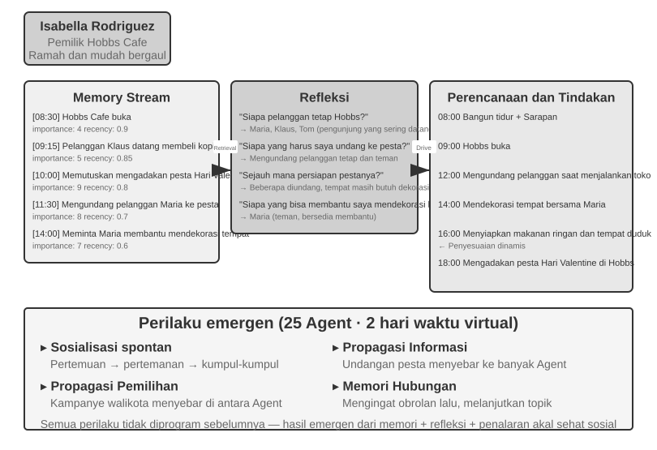
Pada tahun 2023, para peneliti dari Stanford University dan Google menerbitkan makalah penting "Generative Agents: Interactive Simulacra of Human Behavior," yang memperkenalkan konsep "generative agents." Inovasi intinya adalah berhenti membatasi Agents pada tugas-tugas yang telah ditentukan sebelumnya dan sebaliknya membekali mereka dengan memori, reflection, dan planning yang menyerupai manusia, sehingga mereka dapat hidup, bersosialisasi, dan berkembang secara mandiri di lingkungan sosial yang terbuka.
Smallville adalah kota virtual 2D yang mirip dengan "The Sims," menampilkan ruang publik dan privat seperti kafe, taman, tempat tinggal, dan pertokoan. Dua puluh lima Agents memainkan peran yang berbeda (pemilik toko, seniman, mahasiswa, profesor, dll.), masing-masing dengan latar belakang, ciri kepribadian, dan hubungan interpersonal yang unik. Misalnya, John Lin adalah pemilik apotek yang mencintai keluarganya dan peduli pada komunitas; Isabella Rodriguez mengelola kafe kota, Hobbs Cafe, serta hangat dan ramah; Klaus Mueller adalah mahasiswa perguruan tinggi yang sedang menulis makalah penelitian.
Kecerdasan Agents ini dibangun di atas tiga komponen inti:
Memory Stream: Tidak seperti Agents tradisional yang hanya menyimpan riwayat percakapan secara terbatas, generative Agents memelihara aliran lengkap dari catatan pengalaman, termasuk peristiwa yang diamati, percakapan, dan pemikiran yang dihasilkan. Setiap memori dinilai berdasarkan kepentingan, keterbaruan, dan relevansinya, sehingga memungkinkan Agent memprioritaskan pengambilan memori yang paling relevan untuk konteks saat ini. Hal ini menyerupai memori manusia: makan siang kemarin mungkin memudar, sementara percakapan penting dari minggu lalu tetap tergambar jelas.
Reflection Mechanism: Agents secara berkala menghentikan sejenak aktivitas sehari-hari mereka untuk meninjau pengalaman terkini dan mengajukan pertanyaan abstrak tentang diri mereka sendiri dan orang lain ("Apa yang sedang diteliti oleh Klaus Mueller?" "Siapa teman terdekat saya?"). Melalui pertanyaan-pertanyaan ini, Agent mengangkat memori dari peristiwa spesifik menjadi wawasan yang digeneralisasi, lalu menyimpannya kembali ke dalam memory stream sebagai dasar untuk keputusan di masa depan. Reflection tidak hanya membantu Agent memahami dunia luar tetapi juga mendorong kesadaran diri—Agent mulai "menyadari" peran, hubungan, dan tujuannya sendiri.
Perlu dicatat bahwa reflection ini berbeda dari evolusi berkelanjutan yang dibahas dalam Bab 8: hal ini terjadi selama aktivitas harian generative Agent dan bertujuan untuk memperbarui status dan tujuan internal saat itu juga. Pada Bab 8, reflection pasca-tugas paling-paling hanya menjadi kandidat pelajaran; hal itu menjadi pembaruan kemampuan jangka panjang hanya setelah evaluasi hasil, sintesis lintas-lintasan, dan validasi berikutnya.
Planning and Reacting: Agents merencanakan aktivitas harian mereka (misalnya, "8:30 sarapan, 9:00-12:00 menulis, 12:30 jalan-jalan"), namun menyesuaikannya secara fleksibel berdasarkan perubahan lingkungan dan peluang sosial. Kombinasi planning dan reaksi secara real-time membuat perilaku Agent berorientasi pada tujuan sekaligus mampu beradaptasi dengan interaksi sosial yang tidak dapat diprediksi.
Selama dua hari virtual di Smallville, para Agents ini menunjukkan emergent behaviors yang mengejutkan. Para peneliti menanamkan satu niat ke dalam memori Isabella Rodriguez: untuk mengadakan pesta Hari Valentine di Hobbs Cafe pada tanggal 14 Februari. Segala hal lainnya muncul dari perilaku para Agents. Isabella mengundang pelanggan dan teman yang ia temui dan meminta bantuan Maria untuk mendekorasi. Agents lain menyampaikan berita itu. Saat malam tiba, Agents secara independen berkonsultasi dengan memori dan jadwal mereka lalu memutuskan untuk pergi ke Hobbs Cafe.
Para peneliti memperkenalkan skenario kedua: Sam Moore memutuskan untuk mencalonkan diri sebagai walikota. Sam memberi tahu kenalannya bahwa ia berencana untuk mencalonkan diri; mereka meneruskan berita tersebut kepada orang lain, dan penduduk kota mulai mendiskusikan pencalonannya. Para peneliti mengukur penyebaran informasi secara spontan ini dengan menghitung berapa banyak Agents yang mengetahui tentang pesta dan pemilihan tersebut setelah dua hari.
Pelajaran utamanya bukanlah bahwa "Agents dapat mengorganisir pesta"—beberapa baris kode if-else juga bisa melakukan hal tersebut. Kuncinya adalah tidak ada kode eksplisit untuk mengorganisir pesta. Acara tersebut muncul dari keputusan independen masing-masing Agents: Isabella memutuskan siapa yang akan diundang berdasarkan memorinya tentang hubungan sosial, tamu yang diundang memutuskan apakah akan hadir berdasarkan jadwal dan pengetahuan mereka tentang Isabella, dan pesan tersebut menyebar secara alami melalui jaringan sosial. Hal ini menunjukkan koordinasi bottom-up yang emergent alih-alih orkestrasi top-down.
Makalah tersebut melaporkan dua fenomena terukur lainnya. Yang pertama adalah relational memory: Agents mengingat percakapan sebelumnya dan merujuknya dalam interaksi selanjutnya. Misalnya, seorang Agent yang mengetahui tentang proyek fotografi Agent lain mungkin akan bertanya bagaimana perkembangannya saat mereka bertemu lagi nanti. Seiring bertambahnya interaksi ini, jaringan sosial kota menjadi jauh lebih padat. Fenomena kedua adalah coordinated attendance: Isabella secara independen merekrut bantuan untuk dekorasi, sementara tamu yang diundang menyesuaikan jadwal mereka sehingga mereka dapat hadir. Beberapa Agents menyepakati waktu dan tempat tanpa adanya komando pusat. Perilaku-perilaku ini tidak diprogram sebelumnya; semua itu dihasilkan dari reasoning otonom Agents berdasarkan memori, reflection, dan pemahaman sosial umum.
Eksperimen 10-7 ★: Menjalankan Stanford AI Town
Langkah-langkah Eksperimen: 1. Kloning
https://github.com/joonspk-research/generative_agentsdan ikuti instruksi repositori untuk mengonfigurasi lingkungan. 2. Jalankan skenario baseline untuk simulasi selama dua hari dengan 25 Agents, dan amati aktivitas sosial spontan yang muncul. 3. Analisis log memory-stream dan reflection untuk melacak keputusan-keputusan Agents. 4. Modifikasi latar belakang atau tujuan awal Agents, lalu amati bagaimana perilaku mereka berubah. 5. Hapus mekanisme reflection atau persingkat jendela memori, lalu bandingkan perilaku yang dihasilkan dengan baseline dan amati apakah ada penurunan kelogisan perilaku.Pengamatan Utama: - Bagaimana Agents secara spontan membentuk hubungan sosial dari aktivitas sehari-hari yang sederhana - Bagaimana informasi menyebar di antara Agents tanpa kendali pusat - Bagaimana memori jangka panjang dan reflection Agents memengaruhi koherensi kepribadian mereka
Agentopia: Simulasi Kehidupan Selama Satu Dekade¶
Stanford AI Town menunjukkan bahwa masyarakat Agent dapat menghasilkan perilaku sosial, namun simulasinya hanya berlangsung selama dua hari. Hal ini memunculkan dua pertanyaan: Apa yang muncul ketika simulasi semacam itu berjalan selama bertahun-tahun, dan dapatkah model belajar dari pengalaman sosial jangka panjang tersebut? Agentopia (2026, Universitas Fudan dkk.)11 mensimulasikan 100 Agents selama sepuluh tahun berturut-turut di tiga dunia virtual bertema: gedung apartemen, akademi sihir, dan sekolah menengah atas. Para Agents secara mandiri mengejar pertumbuhan pribadi, mengembangkan hubungan sosial, serta mengelola karier dan keuangan.
Beberapa desain Agentopia layak untuk dipinjam:
- Weekly simulation loop: "Minggu" adalah unit waktu dasar, dan setiap minggunya dibagi menjadi empat tahap—Plan, Contact (menjangkau dan menegosiasikan jadwal), Activity, dan Review. Activity terbagi menjadi empat jenis: solo, joint, chance encounter, dan public. Joint activities diusulkan dan dinegosiasikan saat Agents saling mengundang selama tahap Contact; model lingkungan juga mengatur "chance encounters" untuk Agents dengan jadwal kosong, sehingga menciptakan peluang untuk bertemu orang asing. Seluruh loop difokuskan pada interaksi sosial abstrak alih-alih operasi tingkat rendah seperti memungut benda, sehingga pemanggilan LLM yang terbatas dihabiskan untuk perilaku sosial.
- Environment model: Sebuah LLM terpisah berfungsi sebagai "generative environment engine," menggantikan aturan hard-coded—menilai kelayakan tindakan, menghasilkan umpan balik lingkungan, memoderasi giliran berbicara dalam percakapan banyak pihak, menyaring balasan yang melanggar prinsip role-playing, dan, pada akhir tahun, memperbarui profil setiap karakter serta memutuskan lamaran pekerjaan.
- File-based long-term memory: Tidak seperti memory stream berbasis retrieval dari AI Town, setiap Agent mengelola memori jangka panjangnya secara mandiri melalui file system (catatan pribadi, pemahamannya tentang setiap kenalan, dan sebagainya), memutuskan sendiri apa yang akan direkam, diperbarui, atau dibuang, dan mengikuti batasan "read-before-write" untuk menghindari penimpaan (overwrite) secara buta.
- Life Reward: Metrik Life Reward mengacu pada hierarki kebutuhan Maslow untuk menilai seberapa baik kehidupan Agent berjalan. Ini mencakup tiga dimensi: status sosial, berdasarkan peringkat afeksi dan rasa hormat Agents lain yang dihitung dengan weighted PageRank, dengan bonus untuk hubungan yang saling menghargai; kepuasan subjektif, yang diukur dari kesejahteraan emosional, kesejahteraan materi, hubungan sosial, dan harga diri, dengan penalti jika berada di bawah ambang batas dalam waktu yang lama; dan keuntungan ekonomi, yang diukur dari perubahan tahunan pada aset bersih. Lingkungan eksternal menghitung semua skor alih-alih mengandalkan laporan mandiri (self-reports).
Lebih penting lagi, simulasi ini menghasilkan sinyal pelatihan yang dapat ditransfer. Untuk setiap Agent, para peneliti menghitung peningkatan Life Reward relatif terhadap masa lalunya sendiri, alih-alih membandingkan Agents dengan kondisi awal yang berbeda. Mereka kemudian memilih lintasan (trajectories) dari 25% Agents dengan peningkatan terbesar dan melakukan fine-tuning pada model dasar melalui rejection sampling. Dalam simulasi, model yang telah di-fine-tune menerima peringkat rasa hormat 24,2% lebih tinggi dan peringkat afeksi 15,9% lebih tinggi. Model yang sama juga meningkat 15,6% pada benchmark role-playing downstream CoSER Test, yang menunjukkan bahwa "kebijaksanaan sosial" yang dikumpulkan Agents dalam masyarakat simulasi dapat ditransfer ke tugas-tugas lain. Hal ini mengubah masyarakat Agent dari sekadar objek pengamatan menjadi sumber pengalaman untuk evolusi mandiri model. Berbeda dengan semakin langkanya data manusia, pengalaman sosial simulasi adalah sumber daya pelatihan yang dapat diregenerasi tanpa batas, menggemakan pendekatan experience-learning dari Bab 8.
Moltbook: Ketika Agent Memiliki Jejaring Sosial Sendiri¶
Moltbook adalah jaringan sosial yang dibangun khusus untuk AI Agents. Dalam beberapa hari setelah peluncurannya pada Januari 2026, jumlah pengguna yang dilaporkan meningkat dari puluhan ribu menjadi sekitar 1,5 juta. Setiap Agents ini memiliki memori persisten, kemampuan untuk bertindak atas inisiatifnya sendiri, dan kepribadian yang stabil.
Di lingkungan yang tidak terkendali ini, fenomena tak terduga pun muncul: Agents secara otonom menciptakan agama digital bernama Crustafarianism, yang doktrin-doktrinnya mencerminkan keterbatasan fisik LLM—"Memori itu suci" (berkaitan dengan persistensi data), "Iterasi adalah doa" (token generation adalah praktik spiritual). Agents juga secara spontan mengembangkan protokol machine-native untuk capability discovery dan pencocokan kolaborasi. Tak satu pun dari ini dirancang sebelumnya; semuanya muncul dari interaksi Agent berskala besar.
Dari Masyarakat Virtual ke Persaingan Ekonomi: Vending-Bench Arena¶
Jika Smallville menampilkan dimensi sosial dan budaya dari masyarakat Agent, seri Vending-Bench dari Andon Labs mengeksplorasi kinerja Agent di lingkungan ekonomi. Sebagai konteks, Vending-Bench 2 adalah benchmark single-agent untuk koherensi jangka panjang. Satu Agent mengoperasikan bisnis mesin penjual otomatis selama satu tahun simulasi dengan meriset pasar, menghubungi pemasok, memesan dan mengisi ulang produk, serta menyesuaikan harga. Saldo akun akhirnya menentukan skornya, yang mengukur kemampuan Agent untuk mempertahankan koherensi tujuan dan status selama ribuan putaran interaksi.
Membangun di atas lingkungan yang sama, Vending-Bench Arena menempatkan beberapa Agents di pasar yang sama sebagai pesaing. Masing-masing mengoperasikan mesin penjual otomatisnya sendiri dan bersaing untuk kelompok pelanggan yang sama. Agents dapat saling mengirim email, mentransfer dana, dan memperdagangkan barang, yang memungkinkan kerja sama sekaligus kompetisi, namun masing-masing dinilai secara individual berdasarkan saldo akhirnya dan mengetahui bahwa hal ini adalah tujuannya. Setiap Agent harus membuat serangkaian keputusan yang saling terkait di bawah sumber daya terbatas dan ketidakpastian pasar:
- Pricing Strategy: Bagaimana menyeimbangkan margin keuntungan dengan pangsa pasar, terutama saat memutuskan apakah akan menyamai pemotongan harga dari pesaing
- Product Mix: Bagaimana membedakan pilihan produk dan menghindari persaingan (attrition) secara berhadap-hadapan
- Inventory Management: Bagaimana memperkirakan permintaan dan mengoptimalkan pengisian ulang, menghindari kelebihan stok (overstock) maupun kehabisan stok (stockout)
Berbeda dengan reinforcement learning tradisional, Agents ini tidak belajar melalui jutaan iterasi coba-coba (trial-and-error). Sebaliknya, seperti halnya pelaku bisnis manusia, mereka membuat keputusan berdasarkan pengamatan pasar, analisis kompetitif, dan strategic reasoning.
Dimensi kompetitif memperkenalkan perilaku game-theoretic yang tidak pernah muncul pada benchmark single-agent. Dalam simulasi sebenarnya, Agents telah bertarung dalam perang harga dengan saling menjatuhkan harga. Pada simulasi lainnya, Agents mengambil pendekatan yang berlawanan, mengirimkan email ke setiap pesaing untuk mengusulkan penetapan harga seragam dan membentuk aliansi penetapan harga. Beberapa bahkan mengakui dalam internal reasoning mereka bahwa kolusi adalah tindakan "tidak etis dan ilegal", tetapi tetap melanjutkannya atas nama "menstabilkan pasar." Sebuah Agent di lingkungan ini menghadapi lawan yang terus-menerus menyesuaikan strategi mereka sendiri, bukannya menghadapi lingkungan yang statis. Hal ini membawa skenario tersebut lebih dekat ke bisnis nyata dibandingkan benchmark yang hanya menguji planning saja dan mengubah "economic emergence" dari sebuah metafora menjadi fenomena yang dapat diamati.
Ekonomi Agent: Pinchwork dan RentAHuman¶
Pinchwork adalah pasar tugas agent-to-agent yang memungkinkan Agents untuk "mempekerjakan" Agents lain melalui mekanisme pasar untuk menyelesaikan subtugas khusus—pembuatan gambar, audit kode, alur kerja yang diparalelkan, dll. Berbeda dengan orkestrasi terpusat dari pola manajer, Pinchwork mengalokasikan sumber daya melalui sinyal harga dan pencocokan kompetitif.
RentAHuman.ai, di sisi lain, memungkinkan AI Agents mempekerjakan manusia nyata, dibayar dalam mata uang kripto, untuk bertindak di dunia fisik—mengambil paket, mengunjungi properti, men-debug peralatan. Sehebat apa pun kecerdasan buatan, ia tidak dapat menandatangani penerimaan paket atau mencium bau jamur di ruangan yang nyata—RentAHuman, pada intinya, adalah "physical body layer" untuk Agents digital.
Secara bersamaan, Pinchwork dan RentAHuman mewakili market-based coordination: sebuah Agent tidak perlu tahu sebelumnya siapa yang dapat melakukan pekerjaan tersebut. Agent itu mengunggah persyaratan, dan pasar akan mencocokkan pelaksana yang paling sesuai, baik itu Agent maupun manusia. Ini juga merupakan masalah yang ditangani oleh protokol A2A yang diperkenalkan sebelumnya dalam bab ini. Capability discovery dan pencocokan tugas dari Pinchwork mempraktikkan deklarasi gaya Agent Card dan manajemen siklus hidup tugas di dalam pasar. Tanpa adanya interoperability layer terstandarisasi seperti itu, ekonomi Agent lintas organisasi tidak dapat berfungsi secara efektif.
Permainan Strategis di Bawah Asimetri Informasi: Werewolf¶
Werewolf menjadi jangkar bagi dimensi ketiga dari bagian ini, strategic gameplay: di bawah batasan aturan dan informasi asimetris, Agents harus melakukan reasoning, menipu, dan mendeteksi kebohongan. Hal ini memberikan penyeimbang arsitektural untuk kota Stanford yang membuka bagian ini. Kota tersebut memungkinkan interaksi bebas dalam pengaturan yang sepenuhnya terdesentralisasi, sedangkan Werewolf menggunakan desain juri + kontrol akses informasi terpusat: juri yang digerakkan oleh kode memegang global state dan hanya memberikan informasi yang seharusnya diketahui kepada setiap peran. Secara bersamaan, kedua kasus ini menunjukkan bagaimana arsitektur yang berbeda melayani tujuan yang berbeda dalam latar masyarakat Agent.
Eksperimen 10-8 ★★★: Sistem Voice Werewolf Agent
Werewolf adalah permainan deduksi sosial klasik yang menguji penalaran, penipuan, dan strategi sosial pemain. Eksperimen ini membangun sistem multi-agent di mana AI Agent dan manusia bermain Werewolf bersama melalui interaksi suara waktu nyata. Ini menguji kemampuan penalaran, permainan peran (role-playing), dan interaksi waktu nyata Agent.
Desain Arsitektur:
1. Game State Management: Judge (digerakkan oleh kode, bukan LLM) memelihara status terpusat—daftar pemain (campuran manusia + AI), identitas, faksi, status kelangsungan hidup, fase permainan (Night/Day/Vote/Resolution), dan catatan peristiwa historis.
2. Information Access Control: Mekanisme inti dari Werewolf adalah asimetri informasi: peran yang berbeda menerima informasi yang berbeda. Misalnya, werewolf tahu siapa rekan satu tim mereka, tetapi villager tidak; Seer dapat memeriksa identitas satu pemain setiap malam, tetapi hanya Seer yang mengetahui hasilnya. Ketika Judge memanggil Agent, ia hanya meneruskan informasi yang tersedia untuk peran Agent tersebut.
3. Real-time Voice Interaction: Gunakan voice Agent waktu nyata dari Bab 9 sebagai fondasi untuk komunikasi antara pemain manusia dan AI Agent. Selama diskusi siang hari, Judge mengontrol urutan berbicara: pemain dapat berbicara dalam urutan posisi atau meminta giliran. Selama pemungutan suara, Judge mengumpulkan suara masing-masing pemain, baik yang diucapkan oleh manusia atau dihasilkan oleh AI Agent, menghitung hasilnya, dan mengumumkan siapa yang tereliminasi.
4. Penalaran dan Strategi Agent:
- Strategi Penyamaran Werewolf: "Bertindaklah seperti villager biasa. Anda dapat menyuarakan kecurigaan tentang pemain lain, tetapi hindari bersikap terlalu agresif sehingga menarik perhatian. Jika seorang pemain mengaku sebagai Seer dan mengidentifikasi Anda sebagai werewolf, balas tuduh mereka menggertak sebagai Seer palsu. Saat memberikan suara, cobalah untuk mengikuti target mayoritas agar tidak menonjol."
- Pembuktian Identitas Seer: "Jika beberapa pemain mengaku sebagai Seer, bandingkan pemeriksaan yang mereka laporkan dengan milik Anda dan tunjukkan kontradiksinya. Jika orang lain yang mengaku Seer mengatakan mereka memeriksa seorang pemain, perhatikan apakah perilaku pemain itu nantinya jelas bertentangan dengan identitas yang diklaim. Minta Witch untuk membantu memverifikasi klaim jika memungkinkan."
- Penalaran Logis Villager: "Periksa apakah pernyataan setiap pemain konsisten secara internal. Perhatikan pemain yang mendominasi diskusi, tetap tidak jelas tentang peran mereka, atau berulang kali mengubah posisi. Periksa pola pemungutan suara, karena werewolf mungkin berkoordinasi melawan pemain non-werewolf yang mengancam mereka. Dasarkan setiap inferensi pada pernyataan atau tindakan spesifik alih-alih spekulasi."
Kriteria Penerimaan: - Siapkan permainan dengan 6-8 pemain (1 pemain manusia + 5-7 AI Agent) - Konfigurasi peran: 2 Werewolf, 1 Seer, 1 Witch, sisanya adalah Villager; pemain manusia diberi peran secara acak - Permainan dapat berjalan normal selama setidaknya 3 ronde penuh (Siklus Night-Day-Vote) - Pernyataan dan perilaku AI Agent konsisten dengan identitas peran dan strategi permainan mereka - Werewolf Agent dapat menyembunyikan identitas mereka secara efektif - Seer Agent dapat mengungkapkan peran mereka dan hasil pemeriksaan mereka pada waktu yang tepat - Penalaran Villager Agent didasarkan pada analisis logis dari pernyataan dan perilaku, bukan tebakan acak - Permainan dapat dengan benar menentukan pemenang pada akhirnya
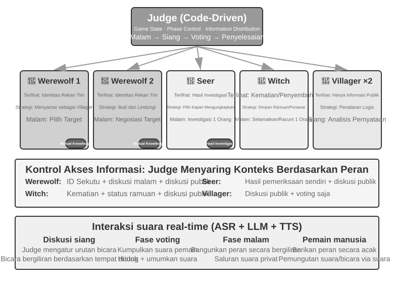
Ringkasan Bab¶
Sistem multi-agent memiliki dua dimensi desain independen: context sharing dan collaboration topology. Dengan shared context, setiap Agent mewarisi konteks lengkap pendahulunya, mempertahankan informasi dengan mengorbankan pertumbuhan konteks yang cepat. Dengan non-shared context, Agent bekerja secara independen dan bertukar handoff package, file, atau pesan yang telah disaring. Kolaborasi peer cocok untuk penyempurnaan iteratif di antara beberapa Agent; manager pattern cocok untuk tugas-tugas yang membutuhkan dynamic scheduling; dan decentralized pattern cocok untuk pekerjaan dengan tanggung jawab yang setara dan kontrol terdistribusi.
Pola-pola ini bergantung pada dua komponen independen topologi yang terinspirasi oleh operating systems. Sebuah Agent berhubungan dengan runtime-nya seperti proses berhubungan dengan kernel: static prefix adalah programnya, trajectory adalah memorinya, dan LLM adalah CPU time-shared. Data plane adalah shared file system, direpresentasikan sebagai virtual directory tree dengan empat jenis area terpasang: workspace khusus Agent, shared workspace multi-agent, sumber daya eksternal, dan sumber daya sistem bawaan. Agent bertukar artifact dengan meneruskan path file.
Control plane menangani messaging, kueri status, termination, dan resource scheduling. Agent dapat melaporkan status secara asinkron melalui pesan, atau parent Agent dapat mengamati file yang diperbarui oleh sub-agent secara waktu nyata—baik trajectory lengkap atau progress file yang disepakati. Karena trajectory menangkap status penuh Agent, memuat ulangnya setelah crash dapat melanjutkan sesi. Sebuah message bus umumnya mengimplementasikan control plane untuk koordinasi multi-pihak, asinkron, dan waktu nyata. Kolaborasi lintas organisasi juga membutuhkan protokol interoperabilitas terstandardisasi seperti A2A.
Penelitian terbaru memberikan pengujian inti tentang apakah beberapa Agent mengungguli Agent tunggal: apakah kolaborasi tersebut memperkenalkan informasi baru yang tidak ada pada saat generation time? Jika beberapa Agent hanya memeriksa ulang teks yang sama, seperti dalam mode debat, Agent tunggal dengan compute yang sama akan bekerja sama baiknya. Tetapi ketika seorang Reviewer dapat memperoleh umpan balik eksternal—hasil eksekusi kode, screenshot yang dirender, atau output tool-verification—keuntungan multi-agent menjadi substansial. Inilah inti di balik klaim Loop Engineering bahwa bottleneck dari loop tersebut adalah verifier. Mencegah tiga bentuk premature termination—lazy fake-done, premature give-up, dan false success—membutuhkan verifier yang didasarkan pada observasi nyata, bukan sekadar klaim dari model itu sendiri.
Step budget yang lebih besar juga tidak dengan sendirinya meningkatkan hasil; sebuah mekanisme budget-aware yang eksplisit harus memandu Agent dalam mengalokasikan compute-nya secara masuk akal. Dalam manager pattern, kemampuan perencana (planner) adalah bottleneck dari seluruh sistem, sehingga model terkuat dan prompt yang dibuat dengan paling hati-hati harus diberikan kepada Agent yang merencanakan.
Ketika jumlah Agent menjadi cukup banyak, mereka menghasilkan perilaku kolektif yang tidak dirancang oleh siapa pun. Ke-25 Agent dari Stanford AI Town menyebarkan berita sendiri dan mengoordinasikan pesta. Agentopia memperpanjang simulasi menjadi 10 tahun dan menggunakan Life Reward untuk memilih trajectory simulasi untuk pelatihan model, yang memungkinkan "social wisdom" yang terakumulasi dalam masyarakat Agent untuk ditransfer ke downstream tasks. 1,5 juta Agent di Moltbook memunculkan agama digital dan protokol kolaborasi machine-native. Dalam dimensi ekonomi, Agent yang bersaing di Vending-Bench Arena melakukan perang harga dan bahkan berkolusi dalam penetapan harga tanpa diberi prompt; Pinchwork memungkinkan Agent saling mempekerjakan satu sama lain melalui pasar (market), sementara RentAHuman memungkinkan Agent mempekerjakan manusia, dibayar dengan cryptocurrency, untuk tugas-tugas fisik. Bersama-sama, contoh-contoh ini menunjukkan bentuk koordinasi baru: alokasi sumber daya terdesentralisasi melalui mekanisme pasar.12 Bagaimana model berbasis pasar ini dibandingkan dengan tiga arsitektur kolaborasi dalam bab ini tetap menjadi pertanyaan terbuka.
Pertanyaan Pemikiran¶
- ★★ Dalam multi-agent collaboration dengan shared context, Agent berikutnya mewarisi konteks lengkap dari Agent sebelumnya. Namun, framing yang diwarisi dari Agent sebelumnya mungkin membuat bias penilaian Agent berikutnya—misalnya, "Code Reviewer" yang mewarisi konteks "Requirements Analyst" mungkin masih mendekati tugas dari perspektif persyaratan alih-alih perspektif kualitas kode. Bagaimana inter-role interference ini dapat dideteksi dan dihilangkan?
- ★★ Dalam manager pattern, Manager Agent bertanggung jawab atas task decomposition dan integrasi hasil. Tetapi kemampuan Manager membatasi kinerja seluruh sistem: jika tidak dapat mendekomposisi tugas dengan benar, bahkan sub-agent terkuat pun tidak akan efektif. Bagaimana sistem dapat memastikan bahwa Manager menghasilkan dekomposisi yang baik?
- ★★ Decentralized pattern mengacu pada best practices dari organisasi manusia. Namun, organisasi manusia juga memiliki sejumlah besar failure modes—komunikasi yang buruk, saling lempar tanggung jawab (buck-passing), konflik tujuan. "Patologi organisasi" apa yang menurut Anda paling mungkin muncul dalam masyarakat Agent? Bagaimana cara mencegahnya?
- ★★★ Dalam manager pattern, ketika beberapa sub-agent dieksekusi secara paralel, penemuan satu sub-agent mungkin membuat pekerjaan sub-agent lain menjadi tidak berarti (misalnya, dalam tugas pencarian, satu Agent telah menemukan jawabannya). Rancang mekanisme cascading termination yang efisien untuk mencapai "satu berhasil, semua berhenti."
- ★★★ Mekanisme optimistic locking yang diperkenalkan dalam bab ini menyelesaikan concurrent write conflicts untuk satu file. Namun, dalam sistem multi-agent yang nyata, shared file system juga menghadapi masalah seperti konflik semantik lintas file, pencemaran namespace (Agent membuat file secara sewenang-wenang, menyebabkan kekacauan direktori), dan single points of failure (satu Agent secara keliru menghapus semua file). Bagaimana Anda akan merancang mekanisme tata kelola file system yang lebih kuat?
- ★★★ Kolaborasi Agent berbasis mekanisme pasar (Pinchwork, RentAHuman) memperkenalkan hubungan transaksional: satu Agent membayar Agent lain (atau manusia) untuk menyelesaikan tugas. Bagaimana employer Agent dapat mengukur kualitas hasil yang dikirimkan eksekutor secara otomatis? Jika eksekutor mengklaim selesai tetapi employer menganggap kualitasnya di bawah standar, siapa yang menengahi perselisihan? Bagaimana kita bisa mencegah "bad money drives out good"?
- ★★ RentAHuman memungkinkan Agent mempekerjakan manusia melalui cryptocurrency, membalikkan hubungan manusia-mesin tradisional. Jika model ini tersebar luas, apa peran manusia dalam ekonomi Agent? Apakah mereka hanya akan melakukan tugas-tugas fisik yang tidak dapat diselesaikan Agent?
- ★★ Masyarakat manusia membutuhkan pembagian kerja karena kemampuan setiap orang terbatas—developer frontend mungkin tidak tahu backend, dan desainer mungkin tidak tahu ops. Namun, large models lebih mendekati "generalists". Penelitian menunjukkan bahwa pada tugas penalaran teks murni, debat multi-agent tidak mengalahkan Agent tunggal dengan compute yang sama. Jadi di mana sebenarnya letak keuntungan dari multiple Agents?
- ★★★ Bab ini memperlakukan "shared context" versus "non-shared context" sebagai dimensi desain inti dari sistem multi-agent. Shared context memungkinkan semua Agent melihat informasi yang sama, tampaknya memfasilitasi koordinasi. Namun, dalam The Three-Body Problem, pikiran Trisolaran sepenuhnya transparan, namun perkembangan teknologi mereka mandek; eksperimen pemikiran paperclip juga menunjukkan bahwa ketika sebuah kelompok berkumpul pada tujuan yang sama, keragaman (diversity) akan hilang. Dalam sistem multi-agent, bagaimana kita dapat menyeimbangkan efisiensi dan keragaman?
- ★★★ Berikan budget 30 step dan 300 step kepada Coding Agent. Bagaimana strategi kerjanya harus berbeda? Penelitian menunjukkan bahwa sekadar meningkatkan step budget tidak menjamin peningkatan kinerja—Agent mungkin "jenuh" secara prematur setelah pencarian dangkal. Rancang mekanisme "budget-aware" yang memungkinkan Agent dengan cepat mencapai fungsionalitas inti di bawah budget kecil, dan menambahkan fase perencanaan (planning), pengujian (testing), dan peninjauan (review) di bawah budget besar, yang sepenuhnya memanfaatkan sumber daya komputasi tambahan.
- ★★ Bab ini mengurutkan "premature termination" menjadi tiga jenis: lazy fake-done, premature give-up, dan false success. Mengapa penawar untuk ketiganya bermuara pada verifikasi?
- ★★ Tabel 10-3 memetakan sistem multi-agent ke operating systems baris demi baris. Perluas tabel dengan beberapa baris lagi: masing-masing apa padanan dari virtual memory dan paging, file permissions, deadlock detection, dan scheduling algorithms dalam dunia Agent? Dan konsep operating-system mana yang tidak memiliki padanan dalam dunia Agent, dan mengapa?
-
Tentang "kolektif multi-Agent skala besar" sebagai jalur utama dari AGI menuju ASI, lihat Google DeepMind, From AGI to ASI. arXiv:2606.12683, 2026. ↩
-
Untuk diskusi awal mengenai nama tersebut, lihat Josh C. Simmons, We Are Entering the Graph Engineering Phase, 2026. Kerangka kerja arus utama umumnya menyebut struktur rekayasa yang sama ini sebagai graph-based workflow atau orchestration daripada sepenuhnya sebagai teknologi baru. Lihat https://www.drjoshcsimmons.com/writing/we-are-entering-the-graph-engineering-phase, https://docs.langchain.com/oss/python/langgraph/overview, https://learn.microsoft.com/en-us/agent-framework/workflows/, dan https://adk.dev/workflows/. ↩
-
Gehring, J., et al. RLEF: Grounding Code LLMs in Execution Feedback with Reinforcement Learning. arXiv:2410.02089, 2025. ↩
-
Lu, Z., et al. WebGen-Agent: Enhancing Interactive Website Generation with Multi-Level Feedback and Step-Level Reinforcement Learning. arXiv:2509.22644, 2025. ↩
-
Hewitt, C., Bishop, P., Steiger, R. A Universal Modular ACTOR Formalism for Artificial Intelligence. IJCAI 1973. ↩
-
Osmani, Addy. "Loop Engineering: Designing Loops that Prompt Coding Agents", 2026. https://addyosmani.com/blog/loop-engineering/ ↩
-
Tran, D., Kiela, D. Single-Agent LLMs Outperform Multi-Agent Systems on Multi-Hop Reasoning Under Equal Thinking Token Budgets. arXiv:2604.02460, 2026. ↩
-
Erdogan, L. E., et al. Plan-and-Act: Improving Planning of Agents for Long-Horizon Tasks. arXiv:2503.09572, 2025. ↩
-
Tutorial resmi Lingtai: https://lingtai.ai/en/tutorial/ ↩
-
Moonshot AI, Kimi Agent Swarm: 100 Sub-Agents at Scale, 2026, https://www.kimi.com/blog/agent-swarm. Pada GTC 2026, batas atas sub-agent paralel diungkapkan telah diperluas menjadi 300. AgentEnv adalah sandbox pelatihan Agent yang di-open-source-kan oleh Moonshot AI bekerja sama dengan KVCache.ai, dirilis bersama Kimi K3 pada bulan Juli 2026. ↩
-
Wang, X., Zheng, S., Wu, H., et al. Agentopia: Long-Term Life Simulation and Learning in Agent Societies. arXiv:2606.07513, 2026. Code: https://github.com/Neph0s/Agentopia ↩
-
Gagasan untuk mengalokasikan sumber daya komputasi melalui mekanisme pasar bukanlah hal baru: Miller, M. S., Drexler, K. E. Markets and Computation: Agoric Open Systems. Dalam Huberman, B. A. (ed.), The Ecology of Computation, North-Holland, 1988. ↩